<!DOCTYPE HTML PUBLIC "-//W3C//DTD HTML 4.01 Transitional//EN">
<html lang="zh-TW"><head>

	<meta http-equiv="Content-Type" content="text/html; charset=utf8">
	<meta name="Author" content="VBird, 鸟哥">
	<meta name="Description" content="首次进入 Linux 的开机、关机与指令下达方式的介绍">
	<title>鸟哥的 Linux 私房菜 -- 开机关机、在线求助与指令下达方式</title>
    <script src="../../script/SpryMenuBar.js" type="text/javascript"></script>
	<script src="../../script/index.js" type="text/javascript"></script>
	<link href="../../css/SpryMenuBarHorizontal.css" rel="stylesheet" type="text/css" />
    <link href="../../css/main.css" rel="stylesheet" type="text/css" />
</head><body style="margin: 0pt; padding: 0pt;" class="table"onload="MM_preloadImages('../../index-2.html','../../index-2.html','../../index-2.html','../../index-2.html','../../index-2.html','../../index-2.html','../../index-2.html','../../index-2.html')">

<center>
<div id="apDiv5">
<div> <LINK REL="SHORTCUT ICON" HREF="../../index-2.html">
<!-- ImageReady Slices (title3.ai) -->
<table id="___01" width="898" height="81" border="0" align="center" cellpadding="0" cellspacing="0";>
	<tr>
		<td colspan="15">
			</td>
	</tr>
	<tr>
		<td rowspan="4" bgcolor="#182448"><p></p>
	    <p><font color="#FFFFFF" size="-1">since2012/04/23</font></p></td>
		<td rowspan="4" align="left" valign="top"><a href="../../index.html"></a></td>
		<td colspan="13">
			</td>
	</tr>
	<tr>
		<td rowspan="3">
			</td>
		<td colspan="2" align="left" valign="top"><a href="../0110whatislinux.html" onmouseout="MM_swapImgRestore()" onmouseover="MM_swapImage('Image51','','image/title/title_06.png',1)"></a></td>
		<td rowspan="2">
			</td>
		<td colspan="3" align="left" valign="top"><a href="../../linux_server/0110network_basic.html" onmouseout="MM_swapImgRestore()" onmouseover="MM_swapImage('Image52','','image/title/title_08.png',1)"></a></td>
		<td rowspan="2">
			</td>
		<td colspan="2" align="left" valign="top"><a href="../../about.html" onmouseout="MM_swapImgRestore()" onmouseover="MM_swapImage('Image53','','image/title/title_10.png',1)"></a></td>
		<td rowspan="3">
			</td>
		<td align="left" valign="top"><a href="mailto:vbird@mail.vbird.idv.tw" onmouseout="MM_swapImgRestore()" onmouseover="MM_swapImage('Image54','','image/title/title_12.png',1)"></a></td>
		<td rowspan="3">
			</td>
	</tr>
	<tr>
		<td colspan="2">
			</td>
		<td colspan="3">
			</td>
		<td colspan="2">
			</td>
		<td rowspan="2">
			</td>
	</tr>
	<tr>
		<td>
			</td>
		<td colspan="3" align="left" valign="top"><ul id="MenuBar1" class="MenuBarHorizontal">
	  <li><a href="../linux_basic.html" onmouseout="MM_swapImgRestore()" onmouseover="MM_swapImage('Image44','','image/title/title_19.png',1)"></a>
			    <ul>
			      <li><a href="../Mandrake9.0/mandrake9.0.html" onmouseout="MM_swapImgRestore()" onmouseover="MM_swapImage('Image46','','image/title/title_26.png',1)"></a></li>
                  <li><a href="fc4.html" onmouseout="MM_swapImgRestore()" onmouseover="MM_swapImage('Image47','','image/title/title_27.png',1)"></a></li>
                  <li><a href="../linux_basic.html" onmouseout="MM_swapImgRestore()" onmouseover="MM_swapImage('Image48','','image/title/title_28.png',1)"></a></li>
                </ul>
		      </li>
		</ul></td>
		<td>
			</td>
		<td colspan="3" align="left" valign="top"><ul id="MenuBar2" class="MenuBarHorizontal">
	  <li><a href="../../linux_server/index.html" onmouseout="MM_swapImgRestore()" onmouseover="MM_swapImage('Image45','','image/title/title_21.png',1)"></a>
			    <ul>
			      <li><a href="../../linux_server/linux_redhat9/redhat9.html" onmouseout="MM_swapImgRestore()" onmouseover="MM_swapImage('Image43','','image/title/title_26.png',1)"></a></li>
			      <li><a href="../../linux_server/centos4.html" onmouseout="MM_swapImgRestore()" onmouseover="MM_swapImage('Image49','','image/title/title_27.png',1)"></a></li>
			      <li><a href="../../linux_server/index.html" onmouseout="MM_swapImgRestore()" onmouseover="MM_swapImage('Image50','','image/title/title_28.png',1)"></a></li>
		        </ul>
		      </li>
		</ul></td>
		<td>
			</td>
	</tr>
	<tr>
		<td>
			</td>
		<td>
			</td>
		<td>
			</td>
		<td>
			</td>
		<td>
			</td>
		<td>
			</td>
		<td>
			</td>
		<td>
			</td>
		<td>
			</td>
		<td>
			</td>
		<td>
			</td>
		<td>
			</td>
		<td>
			</td>
		<td>
			</td>
		<td>
			</td>
	</tr>
</table>
<!-- End ImageReady Slices -->
<script type="text/javascript">
<!--
var MenuBar1 = new Spry.Widget.MenuBar("MenuBar1", {imgDown:"SpryAssets/SpryMenuBarDownHover.gif", imgRight:"SpryAssets/SpryMenuBarRightHover.gif"});
var MenuBar2 = new Spry.Widget.MenuBar("MenuBar2", {imgDown:"SpryAssets/SpryMenuBarDownHover.gif", imgRight:"SpryAssets/SpryMenuBarRightHover.gif"});
//-->
</script>
</div>
<table summary="本文内容的排版" style="width: 898px;" border="0" cellpadding="0" cellspacing="0">
<tbody><tr><td style="width: 16px; height: 16px;">　</td>
    <td style="width: 866px; height: 16px;">　</td>
    <td style="width: 16px; height: 16px;">　</td></tr>
<tr><td style="width: 16px; font-size: 6px;">　</td>
    <td width="866">

<!-- 本文的档头部分 -->
<div style="text-align: center;">
    <a href="http://linux.vbird.org/linux_basic/0160startlinux/0160startlinux-fc4.php">
    <span class="text_head0">开机关机、在线求助与指令下达方式</span></a><br>
</div>
    <div style="text-align: right;">
        <span class="text_history">最近更新日期：2007/12/08</span>
    </div>

<center>本文已不再维护，更新文章请参考<a href="http://linux.vbird.org/linux_basic/0160startlinux.php">这里</a></center>
<!-- 本文的档头部分 -->
<center><table class="head1" summary="排版：文章档头的说明"><tbody><tr><td class="head1">
	由于 Linux 在运作的过程中，会有很多的程序常驻在内存中来执行，此外，
	由于 Linux 的磁盘使用效能比较高，利用了异步的磁盘/内存数据传输的模式，
	因此， Linux 系统是很怕不正常开关机的！因为，不正常开关机的结果，
	将可能造成磁盘数据的损毁啊！(其实各个操作系统都很怕这个问题！)。
	所以，在这个章节，鸟哥会跟大家介绍一下 Linux 正常开关机的步骤，
	以及初次进入 Linux 的您，可以如何来操作文字接口的指令呢！要注意啊！
	学习文字接口真的是一件很不错的事喔！ ^_^
</td></tr></tbody></table></center>

<!-- 本文的连结区部分 -->
<div class="block1">
<span class="text_h1">
1. <a href="#start">首次登入系统</a><br>
	<span class="text_h2">
	　　1.1 <a href="#start_startx">首次登入 FC 图形接口</a><br>
	　　1.2 <a href="#start_kde">KDE 的简易操作</a><br>
	　　1.3 <a href="#start_x_cmd">X Window 与文本模式的切换</a><br>
	　　1.4 <a href="#start_cmd">以文本模式登入 linux</a><br>
	</span>
2. <a href="#cmd">文本模式下指令的下达</a><br>
	<span class="text_h2">
	　　2.1 <a href="#cmd_cmd">开始下达指令</a><br>
	　　2.2 <a href="#cmd_basic">基础指令的操作</a><br>
	　　2.3 <a href="#cmd_hkey">重要的几个热键[Tab], [ctrl]-c, [ctrl]-d</a><br>
	　　2.3 <a href="#cmd_err">错误讯息的查看</a><br>
	</span>
3. <a href="#manual">Linux 系统上的在线求助 man page/info page</a><br>
	<span class="text_h2">
	　　3.1 <a href="#manual_man">man page</a><br>
	　　3.2 <a href="#manual_info">info page</a><br>
	　　3.3 <a href="#manual_docs">其他有用的文件(documents)</a><br>
	</span>
4. <a href="#shutdown">正确的关机方法(shutdown, reboot, init, halt)</a><br>
5. <a href="#shoot">开机过程的问题排解</a><br>
6. <a href="#FAQ">本章习题练习</a><br>
<span class="text_h2">
7. <a href="http://phorum.vbird.org/viewtopic.php?t=23877" target="_blank">针对本文的建议：http://phorum.vbird.org/viewtopic.php?t=23877</a>
</span>
</span>
</div>


<!-- 本文的正式部分 -->
<hr><a name="start"></a><span class="text_h1">首次登入系统</span><br>
<div class="block1">
	登入系统有这么难吗？呵呵！并不难，不过，虽然说是这样说，然而很多人第一次登入
	Linux 的感觉都是『<span class="text_import2">接下来我要干啥？</span>』
	如果是以图形接口登入的话，或许还有很多好玩的事物，但是，要是以文字接口登入的话，
	面对着一片黑压压的屏幕，还真不晓得要干嘛呢！嗯！为了让大家更了解如何正确的使用
	Linux ，正确的登入与离开系统还是需要说明的！<br><br>

	<hr><a name="start_startx"></a><span class="text_h2">首次登入 FC 
	图形接口</span><br>
	<div class="block2">
		啊开机就开机呀！怎么还有所谓的登入与离开呀！？呵呵！开什么玩笑，在
		Linux 里面，正确的开关机可是很重要的！因为，
		不正常的关机可能会导致整个系统的扇区错乱，造成数据的毁损呢！这也是为什么通常我们的
		<span class="text_import2">Linux 主机都会加挂一个不断电系统</span>啰！<br><br>

		在顺利的安装完成之后，就是要快乐的进入 Linux 的世界啦，这个时候，按下电源，
		如果您默认是有启动图形接口的话，那么应该会出现如下的字样(<span class="text_vbird">这里是以 FC4 
		作为范例介绍的，各家版本多少会有点不同的登入画面，这无所谓！
		只是作为选择操作系统的一个画面而已。不过要注意的是，开机前如果想要加入任何的参数，
		就得在底下这个画面来增加喔！ ^_^</span>)<br><br>

		<center>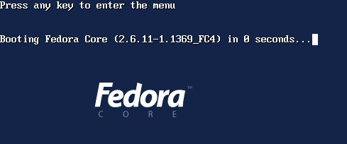<br>
			图 1 、 Linux 的 grub 开机选单画面</center><br>

		看到了吗？！这就是开机的选单啊！在上图的最上一行，告诉我们，如果想要进入额外的选单的话，
		可以按任意键来进入，而这就是 grub 这个程序的功能了。另外，如果您在预设的时间内没有按下任何按键(
		在这一版的 Fedora ，预设是 3 秒钟啦！)，那么 grub 开机管理程序就会以系统默认的核心来开机。
		事实上， grub 的功能还有很多，包含可以在系统发生错误的时候，以额外的参数来强制开机，
		以顺利进行系统的修复等等功能呢！关于这个，我们留待后面的『系统管理员篇』再来详细的介绍这个玩意儿～<br><br>

		此外，如果是以另一个开机管理程序( loader )，也就是 LILO 来设定你 MBR 的开机选单时，
		那么预设也是不会出现选单的！只会有出现『 boot： 』的画面而已，如果按下『 Enter 』
		就会以预设的开机档来开机，如果按下『Tab』按键，就会出现其他可能的开机档啦！
		不过，在预设的情况下， FC4 并不会主动的安装 Lilo 呢！但比较旧的版本还是存在的啦！
		这部份我们同样在管理员篇再介绍！<br><br>

		假设我们是以 FC4 预设的开机核心来开机，那么接下来系统就会读取核心程序，
		并且开始跑一些硬件搜寻的数据，
		然后是一些服务的开启动作，就像下图一般：<br><br>

		<center>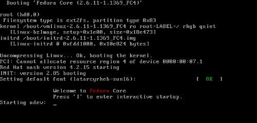<br>
			图 2 、 开机过程的文字画面</center><br>

		如果一切都顺利，嘿嘿！就会进入图形画面了！如同底下的模样！(要注意，
		我们这里默认是以图形接口来登入 Linux 的，所以才会有这样的画面，
		如果您是以纯文本接口来登入 Linux ，那么就不会有这些画面了。果真如此的话，
		那么这部分您稍微瞧一瞧即可！)<br><br>

		<center>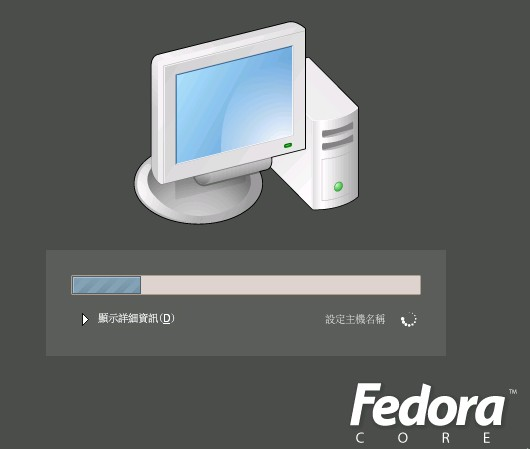<br>
			图 3 、 开机过程的图形画面</center><br>

		如果在上图按下了『显示详细信息』时，就会显示出一些文字讯息了，
		对于初学者来说，或许没有什么太大的意义，不过，还是先告知一下呢，
		这个时候，您可以看一看，到底有多少程序已经被启动呢？<br><br>

		<center>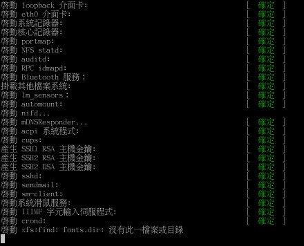<br>
			图 4 、 开机过程的图形画面</center><br>

		怕了吧？？有这么多不知名的咚咚已经在您的 Linux 里面启动了呢！
		里面其实有很多是我们不需要的，在未来您了解了 Linux 相关的知识之后，
		就可以将那些不需要的程序( 或称为服务 )给他关掉了。目前还不需要紧张，
		因为我们还没有连上 Internet 哪！还不需要太紧张啦！ ^_^<br><br>

		另外，如果您是使用本书介绍的 FC4 ( Fedora Core IV )来安装您的 Linux ，
		并且也安装了预设 X Window 启动的状态，那么您就得要设定 X Window 的使用环境啰！
		<span class="text_import2">瞎密！？还需要设定 X Window 喔？</span>没错啊！
		因为您可以修改时区啊、选择语系啊、设定屏幕相关的分辨率与色泽度啊等等的，
		这些都是 X Window 环境下需要的咚咚呢，所以，当然得要设定一下啰。而且设定很简单啦！
		用鼠标点一点就好了，别紧张喔！ ^_^<br><br>

		<hr><a name="start_startx_01"></a><span class="text_h2"> 1. 欢迎画面与授权
		</span><br><div class="block2">
			首先，屏幕会出现如下的欢迎画面，主要分为左右两个画面，左边仅是介绍流程到哪里，
			右边才是内容设定的部分。至于最下方则是下个步骤与前个步骤的按钮。
			我们按下『下一步』后，进入授权的说明。<br><br>

			<center>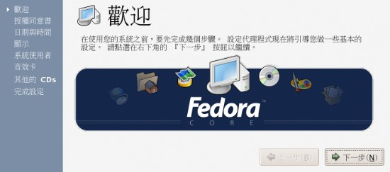<br>
				图 5 、 X Window 设定的欢迎画面</center><br>

			在欢迎画面之后，会出现如下的授权声明，这个时候，当然给他『是的』就好了！<br><br>

			<center>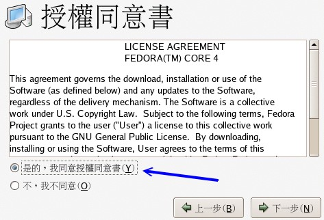<br>
				图 6 、 X Window 设定的授权同意书</center><br>

		</div>
		<hr><a name="start_startx_02"></a><span class="text_h2"> 2. 日期与时间的设定
		</span><br><div class="block2">
			接着下来，就是要设定目前的日期与时间了。您的系统时间可能会跑掉喔！
			所以，这个时候请调整回来吧！ ^_^ 画面左边可以点选正确的日期，
			右方则可以填选正确的时间说！<br><br>

			<center>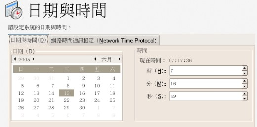<br>
				图 7 、 X Window 设定的日期与时间</center><br>

		</div>
		<hr><a name="start_startx_03"></a><span class="text_h2"> 3. 分辨率与彩度的设定
		</span><br><div class="block2">
			接下来则是重头戏啦！就是 X Window 系统内的显示适配器模块、屏幕分辨率与彩度设定。
			一般来说，如果画面上显示的是您正确的显示适配器，那么问题就不大了！而鸟哥喜好的分辨率，
			大概就是 1024x768 那种大大的画面小小的字体～各人喜好啦！
			而如果您的显示适配器内存没有很大的话，彩度可以调小一点！<br><br>

			<center>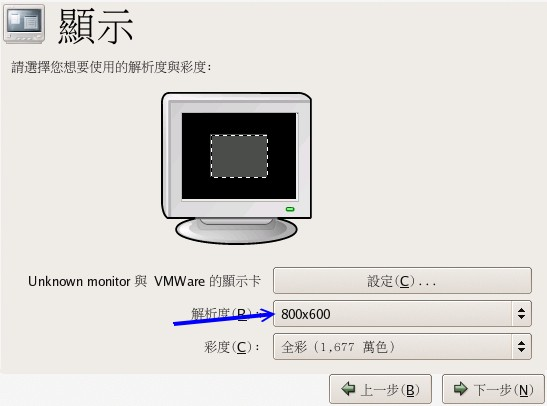<br>
				图 8 、 X Window 设定的分辨率与彩度</center><br>
		</div>
		<hr><a name="start_startx_04"></a><span class="text_h2"> 4. 建立一般账户
		</span><br><div class="block2">
			一般来说，我们在操作 Linux 系统时，除非必要，否则不要使用 root 的权限，
			这是因为管理员(root)的权限太大了！我们可能会随时不小心搞错了一个小咚咚，
			结果却造成整个系统的挂点去.....所以，建立一个一般身份使用者来操作，才是好习惯。
			举例来说，鸟哥都会建立一个一般身份使用者的账号(例如底下的 dmtsai)，
			用这个账号来操作 Linux ，而当我的主机需要额外的 root 权限来管理时，
			才使用身份转换指令(这个我们会在后面提到)来切换身份成为 root 来管理维护呢！ ^_^<br><br>

			如下图所示，登入的账号名称为 dmtsai ，而全名仅是一个简易的说明而已，
			那个地方随便填没关系(不填也无所谓！)。但是两个密码栏均需填写，
			他并不会显示出您打入的字符，而是以 * 取代。两个必须打相同的密码喔！<br><br>

			<center>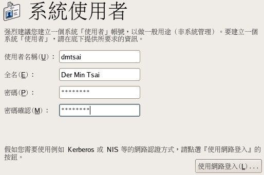<br>
				图 9 、 X Window 设定的建立一般账号使用者</center><br>
		</div>
		<hr><a name="start_startx_05"></a><span class="text_h2"> 5. 额外的音效与软件
		</span><br><div class="block2">
			如果您有声卡的话(或者是主板内建的音效芯片)，就会出现如下的图示。
			如果确定音效芯片名称没有问题，那就直接下一步即可。<br><br>

			<center>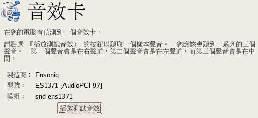<br>
				图 10 、 X Window 设定的声卡确认</center><br>

			如果您还想要额外的安装其他的增强套件，这个时候可以在这里加入。
			不过，我们使用预设的 FC4 ，不需要额外的 CD 来安装啦！<br><br>

			<center>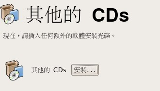<br>
				图 11 、 X Window 设定的额外的 CD</center><br>

			这样就完成了首次 X Window 的设定啰！<br><br>
			<center><br>
				图 12 、 X Window 设定完成</center><br><hr>
		</div>

		接下来呢？嘿嘿！等着进入 X Window 的美美的画面吧！如下图所示，这是 Fedora 
		预设的登入画面。您可以看到中间请你输入『用户名称』，那就是账号啦！
		目前我们 Linux 系统上面应该会有一个 root 与刚刚才建立的 dmtsai 这两个账号呢。
		你可以利用你刚刚自己建立的账号来登入喔！<br><br>

		<center><br>
			图 13 、 等待登入的图形接口</center><br>

		另外，仔细看一下上图中的最下方还有四个选项呢，分别是『语言』、『作业阶段』、『重新启动』
		与『关机』。他们各有什么功能呢？首先，我们先来看看语言有啥功能吧？
		用鼠标按下『语言』之后，就会出现如下的画面。嘿嘿！没错！您可以使用多种语言的显示呢！
		我们是使用繁体中文啊！<br><br>

		<center>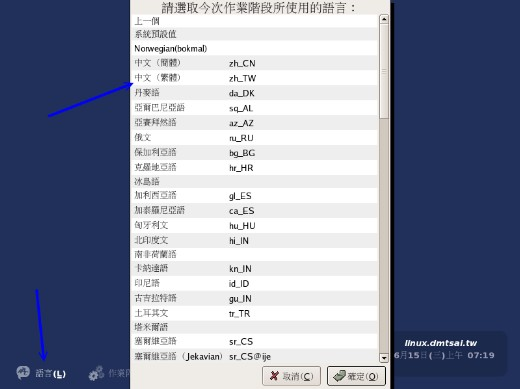<br>
			图 14 、 选择这次工作的语言</center><br>

		在接下来则是『作业阶段』，用鼠标按下他，出现如下画面。不要怀疑！
		在这里你就可以选择你喜欢的 X Window Manager 了！亦即是窗口管理员啊！
		因为鸟哥上次安装时，仅安装 KDE 而已，所以只会出现 KDE ，否则，
		应该还有 GNOME 会出现在这个选单中喔！<br>

		<div style="padding: 10pt 0pt;" align="right"><table width="90%"><tbody><tr><td><b>Tips:</b><br><span style="color: rgb(0, 144, 0);"><font size="-1">			什么是 KDE 呢？为了让 X Window 的显示效果更佳，很多团体开始发展桌面应用的环境，
			KDE 就是其中一个。他们的目标就是发展出类似 Windows 桌面的一整套可以工作的桌面环境，
			KDE 是架构在 X Window 上面的，他可以进行窗口的定位、放大、缩小、
			同时还提供很多的桌面应用软件，详情请参考 <a href="http://www.kde.org/" target="_blank">http://www.kde.org/</a>。GNOME 则是另外一个计划！
		</font></span></td><td></td></tr></tbody></table></div>
		<center>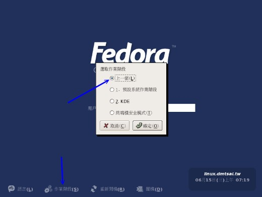<br>
			图 15 、 选择喜好的 Window Manager</center><br>

		各位观众！接下来，哈哈！终于来到了登入的阶段了！如同下面所示，
		输入账号后按下『Enter』再出现密码后，再输入密码，这里同样的，
		屏幕上不会出现密码啦！会用星号(*)取代的喔！<br><br>

		<center>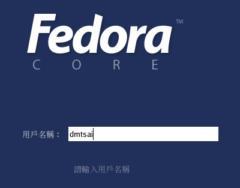<br>
			图 16 、 登入时，账号的填入</center><br>

		<center>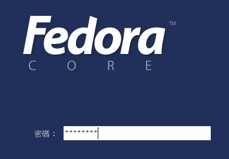<br>
			图 17 、 登入时，密码的填入</center><br>

		接下来就能够进入 X Window 啦！不过，系统还会很好心的询问一下，
		你要不要将这次的环境设定(KDE啊、语言啊等等的)保留成为默认值呢？
		通常鸟哥都是选择默认值啦！所以就给他保留成默认值吧！<br><br>

		<center>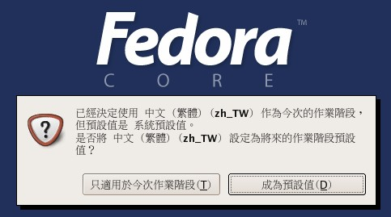<br>
			图 18 、 是否保留此次登入的设定</center><br>
	</div>

	<hr><a name="start_kde"></a><span class="text_h2">KDE 的简易操作</span><br>
	<div class="block2">
		嘿嘿嘿嘿！真是的，历经千辛万苦，终于还是给我进入了 KDE 的画面喔～
		整个画面如下所示，主要分为两个区块，亦即上方深蓝色的桌面区，
		以及下方的任务栏(control panel)。在桌面上还有一些小图示 (icons) 可以用来快速连结到某些内容。
		其实跟微软的 Windows 桌面很像啦！那些小图示就是快捷方式啰！<br><br>

		<center>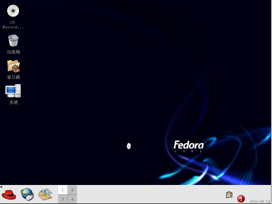<br>
			图 19 、 KDE 的桌面环境</center><br>

		整个桌面的使用方法几乎跟 Windows 一模一样，你可以在桌面上按下右键，
		就可以有额外的选单出现；您也可以直接按下桌面上的『家目录』，就会出现类似 Windows 的
		『档案总管』的档案/目录管理窗口，里面则出现您自己的工作目录；至于最下方的任务栏，
		最左边出现的三个小图示中，那个红色的帽子的功能(KDE menu)，就跟 Windows 的『开始』一样，
		你按下红帽后，就会出现一个下拉式选单出来，您就可以选择其他的相关程序来执行了。<br>

		<div style="padding: 10pt 0pt;" align="right"><table width="90%"><tbody><tr><td><b>Tips:</b><br><span style="color: rgb(0, 144, 0);"><font size="-1">			最左边的图示中，其实在 KDE 原本的图示，是以一个大 K 来展现的。
			Fedora 则修订成为小红帽。某些版本还是保留 KDE 的 K 图示呢！
			另外，关于家目录，记得我们之前说过 Linux 是多人多任务的操作系统吧？
			那么每个人自然应该都会有自己的『工作目录』，这个目录是用户可以完全掌控的，
			所以就称为『用户个人家目录』了。一般来说，家目录都在 /home 底下，
			以我的这次登入为例，我的账号是 dmtsai ，那么我的家目录就应该在
			/home/dmtsai 啰！
		</font></span></td><td></td></tr></tbody></table></div>
		至于任务栏左边数来第二个 icon ，则是一个浏览器喔(Konqueror, 中文翻译为『征服家』)
		。他是 KDE 发展的一个浏览器，
		如果未来您可以连上 Internet 后，就可以利用这个浏览器来浏览网站了！而第三个 icon 
		则是信件收发软件，功能有点类似 Windows 的 outlook express 啰！
		总之，如果您用过 Windows 的话，嘿嘿！这个 KDE 的环境几乎与 Windows 相同，
		你可以开始玩弄 X Window 啰。<br><br>

		且慢且慢！不知道您有没有发现在第三个 icon 的右边还有个四方形的咚咚，
		里面还分成四个小方格，那是个什么咚咚？其实，他被称为虚拟桌面(Virtual Desktop)，
		在你进入 KDE 后，应该是到『1』的画面，但是我们的 KDE 提供了四个虚拟桌面，
		你还可以分别到其他三个桌面去瞧一瞧呢！这预设的四个桌面都可以有自己的底图，
		而如果你有很多窗口时，就可以放在不同的桌面中，还不会互相影响呢！
		赶紧去试看看吧！^_^<br><br>

		最后，在任务栏的最右方有个小小的警告标志(惊叹号)，那是什么啊？！
		没有任何一个操作系统是绝对安全的！我们的 Linux 当然也是～
		而为了保持我们 Linux 的所有程序、套件的安全性，随时将套件更新到最新版本，
		是一个很好的习惯啊！在 Fedora 当中，我们使用的是 Red Hat 发展的 up2date 更新方法，
		但是需要注册才能使用。由于我们还没有连上 Internet ，当然也就尚未注册数据，
		所以这里才会显示一个惊叹号啦！无论如何，我们还可以透过其他较为快速的方法来升级，
		不一定要用这个机制，所以，这个图形就先让他摆在这里，先不要理他。<br>

		<div style="padding: 10pt 0pt;" align="right"><table width="90%"><tbody><tr><td><b>Tips:</b><br><span style="color: rgb(0, 144, 0);"><font size="-1">			这里说不要理他，并不是不重要喔！设定系统的自动升级是目前所有知名的操作系统
			都在努力进行的工作，我们 Fedora 可以利用社群提供的 yum 或 apt 等机制来更新，
			不需要透过远在美国的 Fedora 计划的主机来更新啦！不过，因为这个图示判断是以
			有没有注册来判定，所以，常常我们自己升级了，但这里还是会出现有问题的惊叹号～
			因此，鸟哥才说，先不要理他。另外，这么说您也就知道了，系统可能并不十分安全，
			因此，在尚未提到更新方法之前，连上 Internet 可是很危险的喔！
		</font></span></td><td></td></tr></tbody></table></div>
		至于更多的 X window 相关的使用技巧，以及相关的软件应用，鸟哥这里就不多说了，
		因为鸟哥着重在 Linux 网络服务器的应用啊！ ^_^ 如果您还真的有兴趣，
		建议您可以前往杨老师的网站上看看喔！<a href="http://apt.nc.hcc.edu.tw/docs/FC3_X/" target="_blank">http://apt.nc.hcc.edu.tw/docs/FC3_X/</a> 。<br><br>

		如果使用 KDE 完毕后，想要离开，那么按下任务栏最左方的小红帽，选择最下方的『注销』，
		会出现底下的画面，按下『End current session』就可以回到等待登入的画面啰。<br><br>

		<center>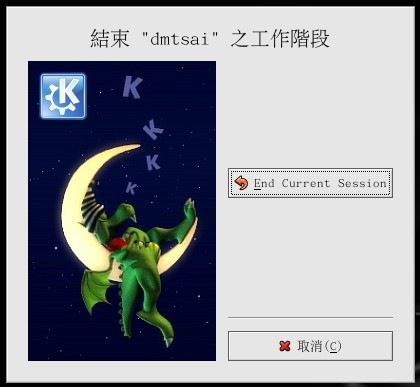<br>
			图 20 、 注销 KDE</center><br>

		同时给他注意一下，如果不想要玩 Linux 了，想要关机时，务必按下那个『关机』的选项，
		以出现如下画面后，选择关闭计算机，这样才行喔！不要直接按电源啊！拜托拜托！<br><br>

		<center>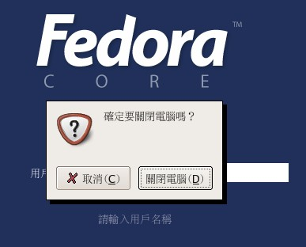<br>
			图 21 、 关闭 Linux 主机</center><br>

		例题：(很简单的，请读者们自行操作找出答案喔)
		<ul>
		<li>如何在任务栏 (Control panel) 上新增其他的 icons ？
		</li><li>尝试浏览一下 /etc 这个目录内，有哪些档案/目录存在？
		</li><li>请将 /etc/crontab 这个档案『复制』到您的家目录中；
		</li><li>尝试修改屏幕分辨率；
		</li><li>请尝试『搜寻』档案，档名为 crontab
		</li><li>在您按下桌面的『家目录』后，出现的窗口中，最右上角有个小钉子，
			按下他之后，发生什么现象？
		</li><li>请修改四个 Virtual Desktop 的壁纸，让他们都不相同；
		</li><li>任务栏的最右方原本是数字形态的时钟，请将他改为图形显示的时钟；
		</li><li>如何叫出控制台？控制面板的『区域性』里面的『键盘对应』有何用处？
		</li></ul>

		特殊小技巧：<br>
		<div class="block2">
		一般来说，我们是可以手动来直接修改 X Window 的配置文件的，不过，
		修改完成之后 X Window 并不会立刻加载，必须要重新启动 X 才行 
		(特别注意，不是重新启动，而是重新启动 X ！) 。那么如何重新启动 X 呢？
		最简单的方法就是<span class="text_import1">在 X 的画面中直接按下 
		[Alt] + [Ctrl] + [Backspace]</span>，
		亦即是退格键，这样就可以直接重新启动 X 啰！也就可以直接读入配置文件啰！
		另外，如果您的 X Window 因为不明原因导致有点问题时，
		也可以利用这个方法来重新启动 X 喔！ ^_^
		</div>
	</div>

	<hr><a name="start_x_cmd"></a><span class="text_h2">X window 
	与文本模式的切换</span><br>
	<div class="block2">
		我们前面一直谈到的是 X Window 的 KDE 环境，那么在这个环境里面有没有纯文本接口的环境啊？
		当然有啊！但是，要怎么切换 X Window 与文本模式呢？注意喔，通常我们也称文本模式为
		<span class="text_import2">终端机接口, terminal 或 console </span> 喔！
		<span class="text_import2">Linux 预设的情况下，
		会提供六个 Terminal 来让使用者登入，切换的方式为使用：[Ctrl] + [Alt] + [F1]~[F6] 
		的组合按钮。</span><br><br>

		同时，系统为了判断，会将 [F1] ~ [F6] 定义为 tty1 ~ tty6 的操作接口环境。
		也就是说，当您按下 [crtl] + [Alt] + [F1] 这三个组合按钮时，就会进入到 tty1 
		的 terminal 界面中了。同样的 [F2] 就是 tty2 啰！那么如何回到刚刚的 KDE 呢？
		很简单啊！按下 [Ctrl] + [Alt] + [F7] 就可以了！<br>

		<div style="padding: 10pt 0pt;" align="right"><table width="90%"><tbody><tr><td><b>Tips:</b><br><span style="color: rgb(0, 144, 0);"><font size="-1">			注：某些 Linux distribution
			会使用到 F8 这个终端接口做为他的桌面终端机，例如 OpenLinux Server 3.1.1
			，所以这部份还不是很统一！无论如何，尝试按按 F7 or F8 就可以知道啰！
		</font></span></td><td></td></tr></tbody></table></div>
		<ul><span class="text_import2">
		<li>[Ctrl] + [Alt] + [F1] ~ [F6]&nbsp; ：文字接口登入 tty1 ~ tty6 终端机；</li>
		<li>[Ctrl] + [Alt] + [F7]&nbsp;&nbsp; ：图形接口桌面。</li></span></ul>

		这也就是说，如果您是以文字接口登入的话，那么您可以有 tty1 ~ tty6 
		这六个文字接口的终端机玩，但是图形接口 则没有任何东西。
		至于以图形接口登入的话，就可以使用图形接口跟文字接口啰！
		而如果您是以文字接口启动 Linux 的，也就是说，您的 tty7 预设是没有东西的，
		那您可以直接下达：

<table class="term"><tbody><tr><td class="term"><pre>[root@linux ~]# <span class="term_command">startx</span>
</pre></td></tr></tbody></table>

		『理论上』就可以启动图形接口啦！当然，『<span class="text_import2">前提是您的 
		X Window 需要设定 OK，且您有安装 KDE/GNOME 等桌面系统才行</span>』。
		好啦，我们知道在 Linux 开机之后，可以进入 X Window 或者是纯文本接口环境，
		那么这两种环境是否可以变更呢？呵呵！那就涉及所谓的『Run Level』了！
		你可以将默认启动的 X Window (Run level 等级为 5)改为不启动(Run level 3)，
		<span class="text_import1">只要修订一下 /etc/inittab 这个档案的内容</span>，就能够决定呢！
		因为我们尚未提到 vi 以及开机过程的详细信息，所以啊，
		这部分得到系统管理员篇幅的时候再说明！别担心，再仔细的看下去吧！<br>
	</div>

	<hr><a name="start_cmd"></a><span class="text_h2">以文本模式登入 linux</span><br>
	<div class="block2">
		好了，刚刚我们有提到按下 [Ctrl] + [Alt] + [F1] 可以来到 tty1 的 terminal 当中，
		而如果您是使用纯文本接口 ( 其实是 run level 3 ) 启动 Linux 主机的话，
		那么预设就是会来到 tty1 这个环境中。这个环境的等待登入的画面有点像这样：<br>

<table class="term"><tbody><tr><td class="term"><pre>Fedora Core release 3 (Heidelberg)
Kernel 2.6.11-1.27_FC3 on an i686

linux login: <span class="term_command">root</span>
Password:
[root@linux ~]# _
</pre></td></tr></tbody></table>

		上面显示的内容是这样的：
		<ul>
		<li>第一行显示的是您的 Linux distribution 与版本；
		</li><li>第二行显示的是您的 Linux 核心版本 (2.6.11-1.27_FC3) ，以及您的硬件等级 ( i686 )。
		</li><li>第三行显是您的主机名 (linux) ，至于 login 后面则是需要你输入登入者的账号。
			在这里请输入您想要登入的使用者账号。我们直接以 root 来登入。注意，
			那个 root 就是『系统管理员』，也就是『超级使用者, Super User』，
			在 Linux 主机之内，这个账号代表的是『无穷的权力！』，任何事都可以进行的，
			因此，使用这个账号要『粉小心！』
		</li><li>第四行则在第三行输入后才会出现，要你输入密码啰！请注意，在输入密码的时候，
			屏幕上面『<span class="text_import2">不会显示任何的字样！</span>』，
			所以不要以为你的键盘坏掉去！
		</li><li>第五行则是正确登入之后才显示的讯息，最左边的 root 显示的是『目前用户的账号』，
			而 @ 之后接的 linux 则是『主机名』，至于最右边的 ~ 则指的是
			『目前所在的目录』，那么那个 # 则是我们常常讲的『提示字符』啦！
		</li></ul>
		<div style="padding: 10pt 0pt;" align="right"><table width="90%"><tbody><tr><td><b>Tips:</b><br><span style="color: rgb(0, 144, 0);"><font size="-1">			那个 ~ 符号代表的是『用户的家目录』的意思，他是个『变量！』
			这相关的意义我们会在后续的章节依序介绍到。举例来说， root 的家目录在 /root，
			所以 ~ 就代表 /root 的意思～而 dmtsai 的家目录在 /home/dmtsai，
			所以如果您以 dmtsai 登入时，他看到的 ~ 就会等于 /home/dmtsai 喔！<br><br>
			至于提示字符方面，在 Linux 当中，默认 root 的提示字符为 # ，
			而一般身份用户的提示字符为 $ 。<br><br>
			还有，上面的第一、第二行的内容其实是来自于 /etc/issue 这个档案喔！
		</font></span></td><td></td></tr></tbody></table></div>
		好了这样就是登入主机了！很快乐吧！耶～<br><br>

		另外，在上面的例子当中，鸟哥是以 root 这个系统管理员身份的账号来登入的。
		但是，在一般时刻的 Linux 使用情况中，为了『系统与网络安全』的考虑，通常我们都希望大家不要以 
		root 身份来登入主机的。这是因为系统管理员账号 root 具有无穷大的权力，
		例如他可以删除任何一个档案或目录，因此，若您以 root 身份登入 Linux 系统，一个不小心下错指令，
		这个时候可不是『欲哭无泪』就能够解决的了问题的～因此，一个称职的网络/系统管理人员，
		通常都会具有两个账号，平时以自己的一般账号来使用 Linux 主机的任何资源，
		有需要动用到系统功能修订时，才会转换身份成为 root 呢！所以，
		<span class="text_import2">鸟哥强烈建议您建立一个普通的账号来供自己平时使用喔！</span>
		更详细的账号讯息，我们会在后续的『<a href="http://linux.vbird.org/linux_basic/0160startlinux/0410accountmanager.php">账号管理</a>』章节中再次提及！
		这里先有概念即可！<br><br>

		那么如何离开系统呢？其实应该说『注销 Linux』才对！注销很简单，直接这样做：<br>

<table class="term"><tbody><tr><td class="term"><pre>[root@linux ~]# <span class="term_command">exit</span>
</pre></td></tr></tbody></table>

		就能够注销 Linux 了。但是请注意：『<span class="text_import1">离开系统并不是关机</span>！』
		基本上，Linux 本身已经有相当多的工作在进行，您的登入也仅是其中的一个『工作』而已，
		所以当您离开时，那么该工作就停止了，不过其他的工作但此时
		Linux 其他的工作是还是进行的！在后面我们再来提如何正确的关机，这里先建立起这个概念即可！
	</div>
</div>

<hr><a name="cmd"></a><span class="text_h1">文本模式下指令的下达</span><br>
<div class="block1">
	其实我们所谓的『文本模式』就是指你在登入 Linux 的时候，得到的一个 Shell 啦！
	那么什么是 Shell 呢？关于这个 Linux 重要的 bash Shell 的作用我们会在后面提到，
	这里您先有个概念就好了。 Shell 提供我们使用者一些工具，可以透过这个工具，
	来控制 kernel 的动作啰！ ^_^。好吧！开始来练一练打字了先！<br><br>

	<hr><a name="cmd_cmd"></a><span class="text_h2">开始下达指令</span><br>
	<div class="block2">
		其实整个指令下达的方式很简单，您只要记得几个重要的概念就可以了。
		举例来说，你可以这样下达指令的：<br>

<table class="term"><tbody><tr><td class="term"><pre>[root@linux ~]# <span class="term_command">command [-options] parameter1 parameter2 ...</span>
<span class="term_note">                  指令     选项      参数(1)    参数(2)</span>
<span class="term_say">说明：
0. 一行指令中第一个输入的绝对是『指令(command)』或『可执行文件案』
1. command 为指令的名称，例如变换路径的指令为 cd 等等；
2. 中刮号[]并不存在于实际的指令中，而加入参数设定时，通常为 - 号，例如 -h；
   有时候完整参数名称会输入 -- 符号，例如 --help；
3. parameter1 parameter2.. 为依附在 option 后面的参数，
   或者是 command 的参数； 
4. command, -options, parameter1.. 这几个咚咚中间以空格来区分，
   不论空几格 shell 都视为一格； 
5. 按下 [Enter] 按键后，该指令就立即执行。[Enter] 按键为 &lt;CR&gt; 字符，
   他代表着一行指令的开始启动。
6. 指令太长的时候，可以使用 \ 符号来跳脱 [Enter] 符号，
   使指令连续到下一行。注意！ \ 后就立刻接特殊字符。
其他：
a. 在 Linux 系统中，英文大小写字母是不一样的。举例来说， cd 与 CD 并不同。
b. 更多的介绍等到 bash 时，再来详述。</span>
</pre></td></tr></tbody></table>

		注意到上面的说明当中，『<span class="text_import2">第一个被输入的数据绝对是指令或者是可执行的档案</span>』！
		这个是很重要的概念喔！还有，按下 [Enter] 键表示要开始执行此一命令的意思。来，我们实际操作：
		以 ls 这个『指令』列出『/root』这个目录下的『所有隐藏档与相关的文件属性』，
		档案的属性的 option 为 -al ，所以：<br>

<table class="term"><tbody><tr><td class="term"><pre>[root@linux ~]# <span class="term_command">ls -al /root</span>
[root@linux ~]# <span class="term_command">ls           -al   /root</span>
</pre></td></tr></tbody></table>

		上面这两个指令的下达方式是一模一样的执行结果喔！为什么？请参考上面的说明吧！
		关于更详细的文本模式使用方式，我们会在『Shell 与 Shell Scripts』篇幅中再来强调喔！
		此外，<span class="text_import1">请特别留意，在 Linux 的环境中，
		『大小写字母是不一样的东西！』</span>也就是说，<span class="text_import2">在
		Linux 底下， VBird 与 vbird 这两个档案是『完全不一样的』档案呢</span>！所以，
		您在下达指令的时候千万要注意到您的指令是大写还是小写。例如当您输入底下这个指令的时候，看看有什么现象：<br>

<table class="term"><tbody><tr><td class="term"><pre>[root@linux ~]# <span class="term_command">date</span>
[root@linux ~]# <span class="term_command">Date</span>
[root@linux ~]# <span class="term_command">DATE</span>
</pre></td></tr></tbody></table>

		很好玩吧！<span class="text_import2">不一样的大小写显示的结果会有错误讯息发生呢</span>！
		因此，请千万记得这个状态呦！好啰，底下我们来练习一下一些简单的指令，好让您可以了解指令下达方式的模式：<br><br>

		另外，很多时候您会发现，<span class="text_import1">咦！怎么我输入指令之后出现的是乱码？？</span>
		这跟鸟哥说的不一样啊！呵呵！不要紧张～我们前面提到过， Linux 是支持多国语系的，若可能的话，
		屏幕的讯息是会以该支持语系来输出的。但是，我们的终端机接口 (terminal) 在预设的情况下，
		无法支持以中文编码输出数据的。这个时候，我们就得将支持语系改为英文，才能够显示出正确的讯息。
		那怎么做呢？您可以这样做：<br>

<table class="term"><tbody><tr><td class="term"><pre>[root@linux ~]# <span class="term_command">LANG=en</span>
[root@linux ~]# <span class="term_command">LANGUAGE=en</span>
[root@linux ~]# <span class="term_command">LC_ALL=en</span>
[root@linux ~]# <span class="term_command">LC_CTYPE=en</span>
[root@linux ~]# <span class="term_command">LC_TIME=en</span>
</pre></td></tr></tbody></table>

		注意一下，上面每一行指令都是用等号『 = 』连接并且等号两边没有空格喔！是连续输入的！
		这样一来，就能够在『这次的登入』察看英文讯息啰！为什么说是『这次的登入』呢？
		因为，如果您注销 Linux 后，刚刚下达的指令就没有用啦！ ^_^，这个我们会在 bash shell 章节中好好聊一聊的！<br>
	</div>

	<hr><a name="cmd_basic"></a><span class="text_h2">基础指令的操作</span><br>
	<div class="block2">
		底下我们立刻来操作几个简单的指令看看啰！
		<ul><span class="text_import2">
		<li>显示日期的指令： date
		</li><li>显示日历的指令： cal
		</li><li>简单好用的计算器： bc
		</li></span></ul>

		<hr><span class="text_h2">1. 显示日期的指令： date</span><br>
		<div class="block2">
			如果在文字接口上面，想要知道目前的时间，那么就直接在指令列模式输入 date 即可显示：<br>

<table class="term"><tbody><tr><td class="term"><pre>[root@linux ~]# <span class="term_command">date</span>
Thu Jun 23 11:32:02 CST 2005
</pre></td></tr></tbody></table>

			上面是显示：星期四, 六月二十三日, 11:32 分， 02 秒，在 2005 年的 CST 时区！请赶快动手做做看呦！
			好了，那么如果我想要让这个程序显示出『 2005/06/23 』这样的日期显示方式呢？
			那么就使用 date 的相关功能吧！<br>

<table class="term"><tbody><tr><td class="term"><pre>[root@linux ~]# <span class="term_command">date +%Y/%m/%d</span>
2005/06/23
[root@linux ~]# <span class="term_command">date +%H:%M</span>
11:35
</pre></td></tr></tbody></table>

			那个『 +%Y%m%d 』就是 date 的一些参数功能啦！很好玩吧！那你问我，
			鸟哥怎么知道这些参数的啊？要背起来吗？当然不必啦！底下再告诉你！<br>
		</div>
		<hr><span class="text_h2">2. 显示日历的指令： cal</span><br>
		<div class="block2">
			那如果我想要列出目前这个月份的月历呢？呵呵！直接给他下达 cal 即可！<br>

<table class="term"><tbody><tr><td class="term"><pre>[root@linux ~]# <span class="term_command">cal</span>
      June 2005
Su Mo Tu We Th Fr Sa
          1  2  3  4
 5  6  7  8  9 10 11
12 13 14 15 16 17 18
19 20 21 22 23 24 25
26 27 28 29 30
</pre></td></tr></tbody></table>

			基本上， cal (calendar) 这个指令可以做的事情还很多，你可以显示整年的月历情况：<br>

<table class="term"><tbody><tr><td class="term"><pre>[root@linux ~]# <span class="term_command">cal 2005</span>
                               2005

       January               February                 March
Su Mo Tu We Th Fr Sa   Su Mo Tu We Th Fr Sa   Su Mo Tu We Th Fr Sa
                   1          1  2  3  4  5          1  2  3  4  5
 2  3  4  5  6  7  8    6  7  8  9 10 11 12    6  7  8  9 10 11 12
 9 10 11 12 13 14 15   13 14 15 16 17 18 19   13 14 15 16 17 18 19
16 17 18 19 20 21 22   20 21 22 23 24 25 26   20 21 22 23 24 25 26
23 24 25 26 27 28 29   27 28                  27 28 29 30 31
30 31
        April                   May                   June
Su Mo Tu We Th Fr Sa   Su Mo Tu We Th Fr Sa   Su Mo Tu We Th Fr Sa
                1  2    1  2  3  4  5  6  7             1  2  3  4
 3  4  5  6  7  8  9    8  9 10 11 12 13 14    5  6  7  8  9 10 11
10 11 12 13 14 15 16   15 16 17 18 19 20 21   12 13 14 15 16 17 18
17 18 19 20 21 22 23   22 23 24 25 26 27 28   19 20 21 22 23 24 25
24 25 26 27 28 29 30   29 30 31               26 27 28 29 30

        July                  August                September
Su Mo Tu We Th Fr Sa   Su Mo Tu We Th Fr Sa   Su Mo Tu We Th Fr Sa
                1  2       1  2  3  4  5  6                1  2  3
 3  4  5  6  7  8  9    7  8  9 10 11 12 13    4  5  6  7  8  9 10
10 11 12 13 14 15 16   14 15 16 17 18 19 20   11 12 13 14 15 16 17
17 18 19 20 21 22 23   21 22 23 24 25 26 27   18 19 20 21 22 23 24
24 25 26 27 28 29 30   28 29 30 31            25 26 27 28 29 30
31
       October               November               December
Su Mo Tu We Th Fr Sa   Su Mo Tu We Th Fr Sa   Su Mo Tu We Th Fr Sa
                   1          1  2  3  4  5                1  2  3
 2  3  4  5  6  7  8    6  7  8  9 10 11 12    4  5  6  7  8  9 10
 9 10 11 12 13 14 15   13 14 15 16 17 18 19   11 12 13 14 15 16 17
16 17 18 19 20 21 22   20 21 22 23 24 25 26   18 19 20 21 22 23 24
23 24 25 26 27 28 29   27 28 29 30            25 26 27 28 29 30 31
30 31
</pre></td></tr></tbody></table>

			也就是说，基本上， cal 接的语法为：<br>

<table class="term"><tbody><tr><td class="term"><pre>[root@linux ~]# <span class="term_command">cal [month] [year]</span>
</pre></td></tr></tbody></table>

			所以，我想要知道 2005 年 7 月的月历，可以直接下达：

<table class="term"><tbody><tr><td class="term"><pre>[root@linux ~]# <span class="term_command">cal 7 2005</span>
      July 2005
Su Mo Tu We Th Fr Sa
                1  2
 3  4  5  6  7  8  9
10 11 12 13 14 15 16
17 18 19 20 21 22 23
24 25 26 27 28 29 30
31
</pre></td></tr></tbody></table>

			所以，未来您可以很轻易的就以 cal 来取得日历上面的日期啰！简直就是万年历啦！ ^_^<br>
		</div>
		<hr><span class="text_h2">3. 简单好用的计算器： bc</span><br>
		<div class="block2">
			如果我想要使用简单的计算器呢？很容易呀！就使用 bc 即可！在输入 bc 之后，
			显示出版本信息之后，就进入到等待指示的阶段。如下所示：<br>

<table class="term"><tbody><tr><td class="term"><pre>[root@linux ~]# <span class="term_command">bc</span>
bc 1.06
Copyright 1991-1994, 1997, 1998, 2000 Free Software Foundation, Inc.
This is free software with ABSOLUTELY NO WARRANTY.
For details type `warranty'.
_<span class="term_note">&lt;==这个时候，光标会停留在这里等待您的输入</span>
</pre></td></tr></tbody></table>

			事实上，我们是『<span class="text_import2">进入到 bc 这个指令的工作环境当中</span>』了！
			就好像我们在 Windows 里面使用『小算盘』一样！所以，我们底下尝试输入的数据，
			都是在 bc 程序当中在进行运算的动作。所以啰，您输入的数据当然就得要符合 bc 的要求才行！
			在基本的 bc 计算器操作之前，先告知几个使用的运算符好了：

			<ul><span class="text_import2"><font face="细明体">
			<li>+  加法
			</li><li>-  减法
			</li><li>*  乘法
			</li><li>/  除法
			</li><li>^  指数
			</li><li>%  余数</li></font></span></ul><font face="细明体"></font>

			好！让我们来使用 bc 计算一些咚咚吧！<br>

<table class="term"><tbody><tr><td class="term"><pre>[root@linux ~]# <span class="term_command">bc</span>
bc 1.06
Copyright 1991-1994, 1997, 1998, 2000 Free Software Foundation, Inc.
This is free software with ABSOLUTELY NO WARRANTY.
For details type `warranty'.
<span class="term_command">1+2+3+4</span>  <span class="term_note">&lt;==只有加法时</span>
10
<span class="term_command">7-8+3</span>
2
<span class="term_command">10*52</span>
520
<span class="term_command">10%3</span>     <span class="term_note">&lt;==计算『余数』</span>
1
<span class="term_command">10^2</span>
100
<span class="term_command">10/100</span>   <span class="term_note">&lt;==这个最奇怪！不是应该是 0.1 吗？</span>
0
<span class="term_command">quit</span>     <span class="term_note">&lt;==离开 bc 这个计算器</span>
</pre></td></tr></tbody></table>

			在上表当中，粗体字表示输入的数据，而在每个粗体字的底下就是输出的结果。
			咦！每个计算都还算正确，怎么 10/100 会变成 0 呢？这是 <span class="text_import1">因为 
			bc 预设仅输出整数，如果要输出小数点下位数，那么就必须要执行
			scale=number ，那个 number 就是小数点位数</span>，例如：<br>
<table class="term"><tbody><tr><td class="term"><pre>[root@linux ~]# <span class="term_command">bc</span>
bc 1.06
Copyright 1991-1994, 1997, 1998, 2000 Free Software Foundation, Inc.
This is free software with ABSOLUTELY NO WARRANTY.
For details type `warranty'.
<span class="term_command">scale=3</span>     <span class="term_note">&lt;==没错！就是这里！！</span>
<span class="term_command">1/3</span>
.333
<span class="term_command">340/2349</span>
.144
<span class="term_command">quit</span>
</pre></td></tr></tbody></table>

			好了！就是这样子啦！简单的很吧！以后你可以轻轻松松的进行加减乘除啦！<br>

			<div style="padding: 10pt 0pt;" align="right"><table width="90%"><tbody><tr><td><b>Tips:</b><br><span style="color: rgb(0, 144, 0);"><font size="-1">				如果照前面说的，我们执行 bc 会进入 bc 的软件功能，
				那么我怎么知道目前等待输入的地方是某个软件的功能还是 shell 的可输入指令的环境下？
				其实，在你进入 Linux 的时候，就会出现提示字符了不是吗？以我们上头的例子来说，
				提示字符就是『<b> [root@linux ~]# </b>』，如果你发现在你等待输入的地方并非提示字符，
				那通常就是已经进入到某个软件的功能当中啦！要注意喔！
			</font></span></td><td></td></tr></tbody></table></div>		</div>
	</div>

	<hr><a name="cmd_hkey"></a><span class="text_h2">重要的几个热键[Tab], 
	[ctrl]-c, [ctrl]-d</span><br>
	<div class="block2">
		在继续后面的章节之前，这里很需要跟大家再来报告一件事，那就是我们的文本模式里头具有很多的功能按键，
		这些按键可以辅助我们进行指令的编写与程序的中断呢！这几个按键请大家务必要记住的！很重要喔！<br><br>

		<li><span class="text_import1">[Tab] 按键</span></li>
		<div class="block2">
			[Tab] 按键就是在键盘的大写灯切换按键([Caps Lock])上面的那个按键！
			在各种 Unix-Like 的 Shell 当中，这个 [Tab] 按键算是 Linux 的 Bash shell 最棒的功能之一了！
			他具有『命令补全』与『档案补齐』的功能喔！可以让我们少打很多字，但重点是，
			可以避免我们打错指令或文件名呢！很棒吧！但是 [Tab] 按键在不同的地方输入，会有不一样的结果喔！
			我们举下面的例子来说明。上一小节我们不是提到 cal 这个指令吗？如果我在指令列输入
			ca 再按两次 [tab] 按键，会出现什么讯息？<br>

<table class="term"><tbody><tr><td class="term"><pre>[root@linux ~]# <span class="term_command">ca[tab][tab]</span>    <span class="term_note">&lt;==[tab]按键是紧接在 a 字母后面！</span>
<span class="term_say"># 上面的 [tab] 指的是『按下那个tab键』，不是要您输入 ca[... 的意思喔！</span>
cadaver             callgrind_control   capiinit            case
cal                 cancel              capinfos            cat
calibrate_ppa       cancel.cups         captoinfo           catchsegv
caller              capifax             card
callgrind           capifaxrcvd         cardctl
callgrind_annotate  capiinfo            cardmgr
</pre></td></tr></tbody></table>

			发现什么事？所有以 ca 为开头的指令都被显示出来啦！很不错吧！
			那如果你输入 ls -al ~/.bash 两个 [tab] 会出现什么？<br>

<table class="term"><tbody><tr><td class="term"><pre>[root@linux ~]# <span class="term_command">ls -al ~/.bash[tab][tab]</span>
.bash_history  .bash_logout   .bash_profile  .bashrc
</pre></td></tr></tbody></table>

			咦！在该目录下面所有以 .bash 的文件名都会被显示出来了呢！注意看上面两个例子喔，
			我们按 [tab] 按键的地方如果是在 command (第一个输入的数据) 后面时，他就代表着
			『命令补全』，如果是接在第二个字以后的，就会变成『档案补齐』的功能了！
			<ul><span class="text_import2">
			<li>[Tab] 接在一串指令的第一个字的后面，则为命令补全；
			</li><li>[Tab] 接在一串指令的第二个字以后时，则为『档案补齐』！
			</li></span></ul>
			善用 [tab] 按键真的是个很好的习惯！可以让您避免掉很多输入错误的机会！！！<br><br>
		</div>
		<li><span class="text_import1">[Ctrl]-c 按键</span></li>
		<div class="block2">
			在 Linux 底下，如果您输入了错误的指令或参数，
			有的时候这个指令或程序会在系统底下『跑不停』这个时候怎么办？别担心，
			如果您想让当前的程序『停掉』的话，可以输入：[Ctrl] 与 c 按键
			(先按着 [Ctrl] 不放，且再按下 c 按键，是组合按键！)，
			那就是 <span class="text_import2">中断目前程序</span> 的按键啦！
			举例来说，如果您输入了『 find / -type vbird 』这个指令时，
			系统会开始跑一些东西 (先不要理会这个指令串的意义)，此时你给他按下
			[Ctrl]-c 组合按键，嘿嘿！是否立刻发现这个指令串被终止了！就是这样的意思啦！<br><br>

			不过你应该要注意的是，这个组合键是可以将正在运作中的指令中断的，
			如果您正在运作比较重要的指令，可别急着使用这个组合按键喔！ ^_^<br><br>
		</div>
		<li><span class="text_import1">[Ctrl]-d 按键</span></li>
		<div class="block2">
			那么 [Ctrl]-d 是什么呢？就是 [Ctrl] 与 d 按键的组合啊！这个组合按键通常代表着：
			『<span class="text_import2">键盘输入结束 (End Of File, EOF 或 End Of Input)</span>』的意思！
			另外，他也可以用来取代 exit 的输入呢！例如您想要直接离开文字接口，
			可以直接按下 [Ctrl]-d 就能够直接离开了(相当于输入 exit 啊！)。<br>
		</div>
		总之，在 Linux 底下，文字接口的功能是很强悍的！要多多的学习他，
		而要学习他的基础要诀就是......多使用、多熟悉啦！
	</div>

	<hr><a name="cmd_err"></a><span class="text_h2">错误讯息的察看</span><br>
	<div class="block2">
		万一我下达了错误的指令怎么办？不要紧呀！您可以 
		<span class="text_import1">藉由屏幕上面显示的错误讯息来了解你的问题点</span>，
		那就很容易知道如何改善这个错误讯息啰！举个例子来说，假如想执行 date 却打错成为
		DATE 时，这个错误的讯息是这样显示的：

<table class="term"><tbody><tr><td class="term"><pre>[root@linux ~]# <span class="term_command">DATE</span>
-bash: DATE: command not found
</pre></td></tr></tbody></table>

		上面那个 <span class="text_import2">bash:</span> 表示的是我们的 Shell
		的名称，那么什么是 Shell 呢？还记不记得我们在 <a href="http://linux.vbird.org/linux_basic/0160startlinux/0110whatislinux.php">什么是
		Linux</a> 的时候提到的『用户、用户接口、核心、硬件』的架构呢？呵呵！那个
		shell 就是用户接口啰！在 Linux 底下默认的用户接口就是 bash shell 啰！<br><br>

		好了，那么上面的例子说明了， bash 有错误，什么错误呢？ bash告诉你：
		<ul><span class="text_import2">DATE: command not found</span></ul>

		字面上的意思是说『指令找不到』，那个指令呢？就是 DATE 这个指令啦！
		所以说，系统上面可能并没有 DATE 这个指令啰！就是这么简单！那如果是底下的样子呢？<br>

<table class="term"><tbody><tr><td class="term"><pre>[root@linux ~]# <span class="term_command">cal 13 2005</span>
cal: illegal month value: use 1-12
</pre></td></tr></tbody></table>

		呵呵！这下子换到 cal 警告你啦， illegal month value: use 1-12，看不懂英文？
		没关系，又不是考试，赶快拿本英文字典在旁边对照着看呀！意思是说『
		<span class="text_import2">不合法的月份值，应该使用 1-12 之间的数字！</span>』
		所以各位看倌您看看，跟着屏幕的错误讯息瞧，很容易知道问题的错误是什么吧！
		因此，以后如果出现了问题，屏幕上的讯息真的是很重要的呢！不要忽略了他呦！<br>
	</div>
	先介绍这几个指令让您玩一玩先，更详细的指令操作方法我们会在第三篇的时候再进行介绍！好了，万一我在操作
	date 这个指令的时候，手边又没有这本书，我要怎么知道要如何加参数，
	好让输出的结果符合我想要的输出格式呢？嘿嘿！到下一节鸟哥来告诉你怎么办吧！
</div>

<hr><a name="manual"></a><span class="text_h1">Linux 系统上的在线求助 man page/info page</span><br>
<div class="block1">
	先来了解一下， Linux 有多少指令呢？在文本模式下，你可以直接按下两个 [Tab]
	按键，看看总共有多少指令？？呵呵！少说也有 2000 多个以上的指令！！
	那在 Linux 里面到底要不要背『指令』啊？可以啊！你背啊！这种事，鸟哥这个『忘性』特佳的老人家，
	实在是背不起来 @_@ ～当然啦，有的时候为了要考试 (例如一些认证考试等等的) 还是需要背一些重要的指令。
	不过，鸟哥主要还是以理解『<span class="text_import2">在什么情况下，应该要使用哪方面的指令</span>』为准的！<br><br>

	既然不需要背指令，那么鸟哥如何知道每个指令的详细用法？还有，某些配置文件的内容到底是什么？
	这个可不需要担心啊！因为在 Linux 开发的软件大多数都是自由软件，而这些软件的开发者为了让大家能够了解指令的用法，
	都会自行制作很多的文件，而这些文件也可以直接在在线就能够轻易的被使用者查询出来喔！很不赖吧！
	这根本就是『联机帮助文件』嘛！哈哈！没错！确实如此。<br><br>

	我们底下就来谈一谈，Linux 到底有多少的在线文件数据呢？<br><br>

	<hr><a name="manual_man"></a><span class="text_h2">man page</span><br>
	<div class="block2">
		嗄？不知道怎么使用 date 这个指令？嘿嘿嘿！不要担心，我们
		Linux 上面的在线求助系统已经都帮您想好要怎么办了，所以你只要使用简单的方法去寻找一下说明的内容，
		马上就清清楚楚的知道该指令的用法了！怎么看呢？就是找男人( man ) 
		呀！？喔！不是啦！<span class="text_import2">这个 man 是 manual (操作说明) 的简写啦</span>！只要下达：
		『man date』 马上就会有清楚的说明出现在你面前喔！如下所示：<br>

<table class="term"><tbody><tr><td class="term"><pre>[root@linux ~]# <span class="term_command">LANG="en"</span>
<span class="term_say"># 还记得这个咚咚的用意吧？前面提过了，是为了『语系』的需要啊！下达过一次即可！</span>
[root@linux ~]# <span class="term_command">man date</span>
DATE(1)                          User Commands                         DATE(1)

NAME
       date - print or set the system date and time

SYNOPSIS
       date [OPTION]... [+FORMAT]
       date [-u|--utc|--universal] [MMDDhhmm[[CC]YY][.ss]]

DESCRIPTION
       Display the current time in the given FORMAT, or set the system date.

       -d, --date=STRING
              display time described by STRING, not 'now'

       -f, --file=DATEFILE
              like --date once for each line of DATEFILE

       -ITIMESPEC, --iso-8601[=TIMESPEC]
              output  date/time  in ISO 8601 format.  TIMESPEC='date' for date
              only, 'hours', 'minutes', or 'seconds' for date and time to  the
              indicated  precision.   --iso-8601  without TIMESPEC defaults to
              'date'.
<span class="term_say">................(略)....</span>
AUTHOR
       Written by David MacKenzie.

REPORTING BUGS
       Report bugs to <bug-coreutils@gnu.org>.

COPYRIGHT
       Copyright ?2004 Free Software Foundation, Inc.
       This is free software; see the source for copying conditions.  There is
       NO warranty; not even for MERCHANTABILITY or FITNESS FOR  A  PARTICULAR
       PURPOSE.

SEE ALSO
       The  full documentation for date is maintained as a Texinfo manual.  If
       the info and date programs are properly installed  at  your  site,  the
       command

              info coreutils date

       should give you access to the complete manual.

date (coreutils) 5.2.1             May 2005                            DATE(1)
</bug-coreutils@gnu.org></pre></td></tr></tbody></table>

		看！马上就知道一大堆的用法了！如此一来，不就可以知道 date 的相关参数了吗？呵呵！真方便！
		而<span class="text_import2">出现的这个屏幕画面，我们称呼他为 man page </span>，
		您可以在里头查询他的用法与相关的参数说明。如果仔细一点来看这个 man page 的话，
		您会发现几个有趣的东西。<br><br>

		首先，在上个表格的第一行，您可以看到的是：『DATE(1)』， DATE 我们知道是指令的名称，
		那么 (1) 代表什么呢？他代表的是『一般用户可使用的指令』的意思！咦！还有这个用意啊！！呵呵！
		没错～在查询数据的后面的数字是有意义的喔！他可以帮助我们了解或者是直接查询相关的资料。
		常见的几个数字的意义是这样的：<br><br>

		<center>
		<table width="500" bgcolor="lightyellow" border="1" cellpadding="5" cellspacing="0">
		<tbody><tr align="center" bgcolor="lightblue"><td width="50">代号</td><td>代表内容</td></tr>
		<tr><td align="center">1</td><td>用户可以操作的指令或可执行文件</td></tr>
		<tr><td align="center">2</td><td>系统核心可呼叫的函数与工具等</td></tr>
		<tr><td align="center">3</td><td>一些常用的函数(function)与函式库(library)</td></tr>
		<tr><td align="center">4</td><td>装置档案的说明</td></tr>
		<tr><td align="center">5</td><td>配置文件或者是某些档案的格式</td></tr>
		<tr><td align="center">6</td><td>游戏(games)</td></tr>
		<tr><td align="center">7</td><td>惯例与协议等，例如 Linux 标准文件系统、
						网络协议、ASCII code 等等的说明内容</td></tr>
		<tr><td align="center">8</td><td>系统管理员可用的管理指令</td></tr>
		<tr><td align="center">9</td><td>跟 kernel 有关的文件</td></tr>
		</tbody></table></center><br>

		所以，未来您如果使用 man page 在察看某些数据时，就会知道该指令/档案所代表的基本意义是什么了。
		举例来说，如果您下达了 man null 时，会出现的第一行是：『NULL(4)』，对照一下上面的数字意义，
		嘿嘿！原来 null 这个玩意儿竟然是一个『装置档案』呢！很容易了解了吧！？<br><br>

		再来，man page 的内容也分成好几个部分来加以介绍该指令呢！就是上头 man date 那个表格内，
		以 NAME 作为开始介绍，最后还有个 SEE ALSO 来作为结束。基本上， man page 大致分成底下这几个部分：<br><br>

		<center>
		<table width="560" bgcolor="lightyellow" border="1" cellpadding="5" cellspacing="0">
		<tbody><tr align="center" bgcolor="lightblue"><td>代号</td><td>内容说明</td></tr>
		<tr><td>NAME</td><td>简短的指令、数据名称说明</td></tr>
		<tr><td>SYNOPSIS</td><td>简短的指令下达语法(syntax)简介</td></tr>
		<tr><td>DESCRIPTION</td><td>较为完整的说明，这部分最好仔细看看！</td></tr>
		<tr><td>OPTIONS</td><td>针对 SYNOPSIS 部分中，有列举的所有可用的参数说明</td></tr>
		<tr><td>COMMANDS</td><td>当这个程序(软件)在执行的时候，可以在此程序(软件)中下达的指令</td></tr>
		<tr><td>FILES</td><td>这个程序或数据所使用或参考或连结到的某些档案</td></tr>
		<tr><td>SEE ALSO</td><td>可以参考的，跟这个指令或数据有相关的其他说明！</td></tr>
		<tr><td>EXAMPLE</td><td>一些可以参考的范例</td></tr>
		<tr><td>BUGS</td><td>是否有相关的臭虫！</td></tr>
		</tbody></table></center><br>

		有时候除了这些外，还可能会看到 Authors 与 Copyright 等等，不过也有很多时候仅有 NAME 与 DESCRIPTION 等部分。
		通常鸟哥在查询某个数据时，一定会察看 NAME 约略看一下这个数据的意思，再详看一下 DESCRIPTION ，这个 
		DESCRIPTION 会提到很多相关的资料与使用时机，从这个地方可以学到很多小细节呢！而如果这个指令其实很熟悉了
		(例如上面的 date )，那么鸟哥主要就是查询关于 OPTIONS 的部分了！可以知道每个参数的意思，
		这样就可以下达比较细部的指令内容呢！最后，鸟哥会再看一下，啊跟这个资料有关的还有哪些东西可以使用的？
		举例来说，上面的 SEE ALSO 就告知我们还可以利用『info coreutils date』来进一步查阅数据，
		某些说明内容还会列举有关的档案 (FILES 部分) 来提供我们参考！这些都是很有帮助的！<br><br>

		好了，大致上了解了 man page 的内容后，那么，在 man page 当中我还可以利用哪些按键来帮忙查阅呢？
		首先，如果要向下翻页的话，可以按下键盘的
		空格键 ，也可以使用 [Page Up] 与 [Page Down] 来翻页呢！同时，如果您知道某些关键词的话，
		那么可以在任何时候输入『 /word 』，来主动搜寻关键词！例如在上面的搜寻当中，
		我输入了 /date 会变成怎样？<br>

<table class="term"><tbody><tr><td class="term"><pre>DATE(1)                          User Commands                         DATE(1)

NAME
       date - print or set the system date and time

SYNOPSIS
       date [OPTION]... [+FORMAT]
       date [-u|--utc|--universal] [MMDDhhmm[[CC]YY][.ss]]

DESCRIPTION
       Display the current time in the given FORMAT, or set the system date.

<span class="term_say">...........(中间省略)........

<span class="term_write">/date</span>
</span></pre></td></tr></tbody></table>

		看到了吗？<span class="text_import2">您按下『/』之后，光标应该就会移动到屏幕的最下面一行，
		并等待您输入搜寻的字符串</span>了。此时，输入 date 后， man page 就会开始搜寻跟 date 有关的字符串，
		并且移动到该区域呢！很方便吧！最后，如果要离开 man page 时，直接按下『 q 』就能够离开了。
		我们将一些在 man page 常用的按键给他整理整理：<br><br>

		<center>
		<table cellpading="5" width="500" bgcolor="lightyellow" border="1" cellspacing="0">
		<tbody><tr align="center" bgcolor="lightblue"><td width="100">按键</td><td>进行工作</td></tr>
		<tr><td>空格键</td><td>向下翻一页</td></tr>
		<tr><td>[Page Down]</td><td>向下翻一页</td></tr>
		<tr><td>[Page Up]</td><td>向上翻一页</td></tr>
		<tr><td>[Home]</td><td>去到第一页</td></tr>
		<tr><td>[End]</td><td>去到最后一页</td></tr>
		<tr><td>/string</td><td>向『下』搜寻 string 这个字符串，如果要搜寻 vbird 的话，就输入 /vbird
			</td></tr>
		<tr><td>?string</td><td>向『上』搜寻 string 这个字符串</td></tr>
		<tr><td>n, N</td><td>利用 / 或 ? 来搜寻字符串时，可以用 n 来继续下一个搜寻 (不论是 / 或 ?)
			，可以利用 N 来进行『反向』搜寻。举例来说，我以 /vbird 搜寻 vbird 字符串，
			那么可以 n 继续往下查询，用 N 往上查询。若以 ?vbird 向上查询 vbird 字符串，
			那我可以用 n 继续『向上』查询，用 N 反向查询。</td></tr>
		<tr><td>q</td><td>结束这次的 man page</td></tr>
		</tbody></table></center><br>

		要注意喔！<span class="text_import2">上面的按键是在 man page 的画面当中才能使用的！</span>
		比较有趣的是那个搜寻啦！我们可以往下或者是往上搜寻某个字符串，例如要在 man page 内搜寻 vbird 这个字符串，
		可以输入 /vbird 或者是 ?vbird ，只不过一个是往下而一个是往上来搜寻的。而要
		<span class="text_import2">重复搜寻</span> 某个字符串时，可以使用 n 或者是 N 来动作即可呢！
		很方便吧！^_^<br><br>

		既然有 man page ，自然就是因为有一些文件数据，所以才能够以 man page 来读出来啰！
		那么这些 man page的数据 放在哪里呢？不同的 distribution
		通常可能有点差异性，不过，通常是放在 <span class="text_import1">/usr/share/man</span>
		这个目录里头，然而，我们可以透过修改他的 man page 搜寻路径来改善这个目录的问题！<span class="text_import1">修改
		/etc/man.config ( 有的版本为 man.conf 或 manpath.conf) </span>即可啰！至于更多的关于
		man 的讯息您可以使用『 man man 』来查询呦！关于更详细的设定，我们会在 Shell
		的章节当中继续的说明喔！<br><br>

		man 还有一些有趣的使用方式呢！举例来说，如果您还想要知道更多跟 man 有较相关的讯息，
		可以下达：<br>

<table class="term"><tbody><tr><td class="term"><pre>[root@linux ~]# <span class="term_command">man -f man</span>
man                  (1)  - format and display the on-line manual pages
man                  (7)  - macros to format man pages
man.conf [man]       (5)  - configuration data for man
</pre></td></tr></tbody></table>

		看到了吗？使用 -f 的参数，可以取得更多的 man 的相关信息，而上头这个表格当中，也有提示了 (数字) 的内容，
		举例来说，第二行的『 man (7) 』表示有个 man (7) 的说明文件存在喔！但是却有个 man (1) 存在啊！
		那当我们下达『 man man 』的时候，到底是找到哪一个说明档呢？嘿嘿！混乱了吧？！
		其实，您可以指定不同的文件的，举例来说，上表当中的两个 man 您可以这样将他的文件叫出来：<br>

<table class="term"><tbody><tr><td class="term"><pre>[root@linux ~]# <span class="term_command">man 1 man</span>  <span class="term_note">&lt;==这里是用 man(1) 的文件数据</span>
[root@linux ~]# <span class="term_command">man 7 man</span>  <span class="term_note">&lt;==这里是用 man(7) 的文件数据</span>
</pre></td></tr></tbody></table>

		你可以自行将上面两个指令输入一次看看，就知道，两个指令输出的结果是不同的。
		那个 1, 7 就是分别取出在 man page 里面关于 1 与 7 相关数据的文件档案啰！
		好了，那么万一我真的忘记了下达数字，只有输入『 man man 』时，那么取出的数据到底是 1 还是 7 啊？
		这个就跟搜寻的顺序有关了。搜寻的顺序是记录在 /etc/man.conf 这个配置文件当中，
		<span class="text_import2">先搜寻到的那个说明档，就会先被显示出来！</span>
		一般来说，通常会先找到数字较小的那个啦！因为排序的关系啊！所以， man man 会跟 man 1 man 结果相同！
		这样说，可以明白了吗？！<br><br>

		除此之外，我们还可以利用『关键词』找到更多的说明文件数据喔！例如：<br>

<table class="term"><tbody><tr><td class="term"><pre>[root@linux ~]# <span class="term_command">man -k man</span>
. [builtins]         (1)  - bash built-in com<span class="term_write">man</span>ds, see bash(1)
alias [builtins]     (1)  - bash built-in com<span class="term_write">man</span>ds, see bash(1)
<span class="term_say">........(中间省略)....</span>
xsm                  (1x)  - X Session <span class="term_write">Man</span>ager
zshall               (1)  - the Z shell meta-<span class="term_write">man</span> page
zshbuiltins          (1)  - zsh built-in com<span class="term_write">man</span>ds
zshzle               (1)  - zsh com<span class="term_write">man</span>d line editor
</pre></td></tr></tbody></table>

		看到了吧！很多对吧！因为这个是利用关键词将说明文件里面只要含有 man 那个字眼的(不见得是完整字符串)
		就将他取出来！很方便吧！ ^_^<br><br>

		事实上，还有两个指令与 man page 有关呢！而这两个指令是 man 的简略写法说～
		就是这两个：<br>

<table class="term"><tbody><tr><td class="term"><pre>[root@linux ~]# <span class="term_command">whatis  [指令或者是数据]</span>   <span class="term_note">&lt;==相当于 man -f [指令或者是数据]</span>
[root@linux ~]# <span class="term_command">apropos [指令或者是数据]</span>   <span class="term_note">&lt;==相当于 man -k [指令或者是数据]</span>
</pre></td></tr></tbody></table>

		<div style="padding: 10pt 0pt;" align="right"><table width="90%"><tbody><tr><td><b>Tips:</b><br><span style="color: rgb(0, 144, 0);"><font size="-1">			一般来说，鸟哥是真的不会去背指令的，只会去记住几个常见的指令而已。那么鸟哥是怎么找到所需要的指令呢？
			举例来说，打印的相关指令，鸟哥其实仅记得 lp (line print)而已。那我就由 man lp 开始，去找相关的说明，
			然后，再以 lp[tab][tab] 找到任何以 lp 为开头的指令，找到我认为可能有点相关的指令后，
			再以 man 去查询指令的用法！呵呵！所以，如果是实际在管理 Linux ，
			那么真的只要记得几个很重要的指令即可，其他需要的，嘿嘿！努力的找男人(man)吧！
		</font></span></td><td></td></tr></tbody></table></div>	</div>

	<hr><a name="manual_info"></a><span class="text_h2">info page</span><br>
	<div class="block2">
		在所有的 Unix Like 系统当中，都可以利用 man 来查询指令或者是相关档案的用法；
		但是，在 Linux 里面则又额外提供了一种在线求助的方法，那就是利用 info 这个好用的家伙啦！
		基本上， info 与 man 其实差不多，而且，文件数据必须要以 info 写成的，才会比较完整。
		而这个支持 info 指令的文件是放置在 <span class="text_import1">/usr/share/info/</span> 这个目录当中的。
		举例来说，info 的说明文件有写成 info 格式，所以，你使用 info info 可以得到：<br>

<table class="term"><tbody><tr><td class="term"><pre>[root@linux ~]# <span class="term_command">info info</span>
File: info.info,  <span class="term_write">Node</span>: Top,  <span class="term_write">Next</span>: Getting Started,  Up: (dir)

Info: An Introduction
*********************

The GNU Project distributes most of its on-line manuals in the "Info
format", which you read using an "Info reader".  You are probably using
an Info reader to read this now.

   There are two primary Info readers: `info', a stand-alone program
designed just to read Info files, and the `info' package in GNU Emacs,
a general-purpose editor.  At present, only the Emacs reader supports
using a mouse.

   If you are new to the Info reader and want to learn how to use it,
type the command `h' now.  It brings you to a programmed instruction
sequence.

   To read about expert-level Info commands, type `n' twice.  This
brings you to `Info for Experts', skipping over the `Getting Started'
chapter.

* Menu:

<span class="term_write">*</span> Getting Started::             Getting started using an Info reader.
<span class="term_write">*</span> Expert Info::                 Info commands for experts.
<span class="term_write">*</span> Creating an Info File::       How to make your own Info file.
<span class="term_write">*</span> Index::                       An index of topics, commands, and variables.

--zz-Info: (info.info.gz)Top, 29 lines --All---------------------------------
Welcome to Info version 4.8. Type ? for help, m for menu item.
</pre></td></tr></tbody></table>

		仔细的看到上面这个表，您可以发现最后一行显示出目前的 info 这个程序的版本信息，
		<span class="text_import2">你可以按下 m 这个按键</span>，就可以有更多的指令说明。
		而第一行则显示目前这个 info page 的檔名，
		注意到我将他显示成为特殊字体的那几个部分，第一行的 Node 显示，这个画面是『在第几层？』的意思，
		因为 info page 将所有有关的资料都进行了链接，因此，他可以利用分层的架构来说明每个文件数据呢！
		而且还有下一层数据，因此，您会看到第一行还有 Next 这个字眼。这表示，
		<span class="text_import2">您只要输入『n』这个按键后，就可以跑到下一层</span>，
		也就是 Getting Started 那个章节去了！呵呵！很方便吧！<br><br>

		再来，你也会看到有『Menu』那个咚咚吧！底下共分为四小节，分别是 Getting Started 等等的，
		我们<span class="text_import2">可以将光标移动到该文字或者 * 上面，按下 Enter </span>，
		就可以前往该小节了！而，<span class="text_import2">利用 [Tab] 按键，就可以快速的将光标在上表的画面中的
		node 间移动</span>，真的是很方便啦！不过，什么是 node 呢？就是各个入口点称为 node 。
		举例来说，上个表格当中，按下 n 或者是将游标游动到 Next 这个字上，按下 Enter ，就可以前往下个说明了。
		这就是 node 啊！<br><br>

		不过，就如同前面说的， info 需要文件有支持才行，如果我们以没有支持的 man 来看的话，
		info man 的结果与 man man 的结果就一样了～没有不同啊！<br><br>

		至于 info page 当中可以使用的按键，可以整理成这样：<br><br>

		<center>
		<table cellpading="5" width="500" bgcolor="lightyellow" border="1" cellspacing="0">
		<tbody><tr align="center" bgcolor="lightblue"><td width="100">按键</td><td>进行工作</td></tr>
		<tr><td>空格键</td><td>向下翻一页</td></tr>
		<tr><td>[Page Down]</td><td>向下翻一页</td></tr>
		<tr><td>[Page Up]</td><td>向上翻一页</td></tr>
		<tr><td>[tab]</td><td>在 node 之间移动，有 node 的地方，通常会以 * 显示。</td></tr>
		<tr><td>[Enter]</td><td>当光标在 node 上面时，按下 Enter 可以进入该 node 。</td></tr>
		<tr><td>b</td><td>移动光标到该 info 画面当中的第一个 node 处</td></tr>
		<tr><td>e</td><td>移动光标到该 info 画面当中的最后一个 node 处</td></tr>
		<tr><td>n</td><td>前往下一个 info page 处</td></tr>
		<tr><td>p</td><td>前往上一个 info page 处</td></tr>
		<tr><td>u</td><td>向上移动一层</td></tr>
		<tr><td>s(/)</td><td>在 info page 当中进行搜寻</td></tr>
		<tr><td>h</td><td>显示求助选单</td></tr>
		<tr><td>?</td><td>指令一览表</td></tr>
		<tr><td>q</td><td>结束这次的 info page</td></tr>
		</tbody></table></center><br>

		info page 也是很不错用啦！有兴趣的话，可以多多去查询查询哩！ ^_^<br>
	</div>

	<hr><a name="manual_docs"></a><span class="text_h2">其他有用的文件(documents)</span><br>
	<div class="block2">
		刚刚前面说，一般而言，指令或者软件制作者，都会将自己的指令或者是软件的说明制作成『联机帮助文件』！
		但是，毕竟不是每个咚咚都需要做成联机帮助文件的，还有相当多的说明需要额外的文件！此时，这个所谓的
		How-To ( 如何做的意思 ) 就很重要啦！还有，某些软件不只告诉你『如何做』，
		还会有一些相关的原理会说明，那么这些说明文件要摆在哪里呢？哈哈！就是摆在这个目录
		<span class="text_import1">/usr/share/doc</span>
		啦！所以说，其实，您只要到这个目录底下，就会发现好多好多的说明文件档啦！还不需要到网络上面找数据呢！厉害吧！
		^_^<br><br>

		举例来说，您想要知道这一版的 Fedora 相关的各项信息，可以直接到：
		<ul><li>/usr/share/doc/fedora-release-4</li></ul>
		这个目录来查阅一下即可了解！如果想要知道 bash 是什么，则可以到 /usr/share/doc/bash-3.0 这个目录中！
		很多东西呦！而且， /usr/share/doc 这个目录下的数据主要是以套件 (packages) 为主的，
		例如 GCC 这个套件的相关信息在 /usr/share/doc/gcc-xxx (那个 xxx 表示版本的意思！)。
		未来可得多多查阅这个目录喔！ ^_^<br><br>
	</div>

	记住喔！在文字接口下，有任何你不知道的玩意儿，但是你想要了解他，请赶快使用
	man 或者是 info 来查询这个玩意儿！此外，如果你想要架设一些其他的服务时，请赶快到
	/usr/share/doc 底下查一查有没有该服务的说明档喔！另外，再次的强调，因为
	Linux 毕竟是外国人发明的，所以中文文件确实是比较少的！但是不要害怕，拿本英文字典在身边吧！
	随时查阅！不要害怕英文喔！
</div>

<hr><a name="shutdown"></a><span class="text_h1">正确的关机方法(shutdown, reboot, init, halt)</span><br>
<div class="block1">
	OK！大概知道开机的方法，也知道基本的指令操作，而且还已经知道在线查询了，好累呦！
	想去休息呢！那么如何关机呢？我想，很多朋友在
	DOS 的年代已经有在玩计算机了！在当时我们关掉 DOS 的系统时，常常是直接关掉电源开关，而
	Windows 在你不爽的时候，按着电源开关四秒也可以关机！但是在 Linux 则相当的不建议这么做！<br><br>

	Why？在 Windows (非 NT 主机系统) 系统中，由于是单人假多任务的情况，所以即使你的计算机关机，
	对于别人应该不会有影响才对！不过呢，在 Linux 底下，由于每个程序（或者说是服务）
	都是在在背景下执行的，因此，<span class="text_import1">在你看不到的屏幕背后其实可能有相当多人同时在你的主机上面工作</span>，
	例如浏览网页啦、传送信件啦以 FTP 传送档案啦等等的，如果你直接按下电源开关来关机时，
	则其他人的数据可能就此中断！那可就伤脑筋了！此外，最大的问题是，
	<span class="text_import1">若不正常关机，则可能造成文件系统的毁损</span>
	（因为来不及将数据回写到档案中，所以有些服务的档案会有问题！）。正常情况下，要关机时需要注意底下几件事：

	<ul>
	<li><span class="text_import1">观察系统的使用状态</span>：如果要看目前有谁在在线，可以下达
		who 这个指令，而如果要看网络的联机状态，可以下达 netstat -a 这个指令，而要看背景执行的程序可以执行
		ps -aux 这个指令。使用这些指令可以让你稍微了解主机目前的使用状态！当然啰，就可以让你判断是否可以关机了
		（这些指令在后面 Linux 常用指令中会提及喔！）</li><br>

	<li><span class="text_import1">通知在线使用者关机的时刻</span>：
		要关机前总得给在线的使用者一些时间来结束他们的工作，所以，这个时候你可以使用
		shutdown 的特别指令来达到此一功能。</li><br>

	<li><span class="text_import1">正确的关机指令使用</span>：例如 shutdown 与 reboot 两个指令！</li>
	</ul>

	所以底下我们就来谈一谈关于这个关机的正确指令用法啰！
	<ul>
	<li>将数据同步写入硬盘中的指令： sync</li>
	<li>惯用的关机指令： shutdown</li>
	<li>重新启动，关机： reboot, halt, poweroff</li>
	</ul>

	<hr><a name="sync"></a><span class="text_h2">数据同步写入磁盘： sync</span><br>
	<div class="block2">
		在 Linux 系统中，为了加快数据的读取速度，所以，默认的情况中，
		某些数据将不会直接被写入硬盘，而是先暂存在内存当中，如此一来，
		如果一个数据被你重复的改写，那么由于他尚未被写入硬盘中，因此可以直接由内存当中读取出来，
		在速度上一定是快上相当多的！<br><br>

		不过，如此一来也造成些许的困扰，那就是，万一当你重新启动，或者是关机，或者是不正常的断电的情况下，
		由于数据尚未被写入硬盘当中，哇！所以就会造成数据的更新不正常啦！那要怎么办呢？这个时候就需要
		sync 这个指令来进行数据的写入动作啦！直接在文字接口下输入 sync ，
		那么在内存中尚未被更新的数据，就会被写入硬盘中！所以，这个指令在系统关机或重新启动之前，
		很重要喔！最好多执行几次！(注：这个指令也只有 root 可以执行喔！ )<br><br>

		虽然目前的 shutdown/reboot/halt 等等指令均已经在关机前进行了 sync 这个工具的呼叫，
		不过，多做几次总是比较放心点～呵呵～<br>

<table class="term"><tbody><tr><td class="term"><pre>[root@linux ~]# <span class="term_command">sync</span>
</pre></td></tr></tbody></table>
	</div>

	<hr><span class="text_h2">惯用的关机指令： shutdown</span><br>
	<div class="block2">
		好了，由于关机有种种的限制因子在，所以<span class="text_import2">只有 root 有权力关机而已喔！</span>
		嗯！那么就来关机试试看吧！我们较常使用的是
		shutdown 这个指令，而这个指令会通知系统内的各个程序( processes )，并且将通知系统中的
		run-level 内的一些服务来关闭( run-level 会在后面告知喔 )。shutdown 可以达成：

		<ul><span class="text_import2">
		<li>可以自由选择关机模式：是要关机、重新启动或进入单人操作模式均可；</li>
		<li>可以设定关机时间: 可以设定成现在立刻关机, 也可以设定某一个特定的时间才关机。</li>
		<li>可以自定义关机讯息：在关机之前，可以将自己设定的讯息传送给在线 user 。</li>
		<li>可以仅发出警告讯息：有时有可能你要进行一些测试，而不想让其他的使用者干扰，
			或者是明白的告诉使用者某段时间要注意一下！这个时候可以使用
			shutdown 来吓一吓使用者，但却不是真的要关机啦！</li>
		<li>可以选择是否要 fsck 检查文件系统 。</li>
		</span></ul>

		那么 shutdown 的语法是如何呢？聪明的读者大概已经开始找『男人』了！没错，随时随地的
		man 一下，是很不错的举动！好了，简单的语法规则为：<br>

<table class="term"><tbody><tr><td class="term"><pre>[root@linux ~]# <span class="term_command">/sbin/shutdown [-t 秒] [-arkhncfF] [时间] [警告讯息]</span>
<span class="term_say">实例：</span>
[root@linux ~]# <span class="term_command">/sbin/shutdown -h 10 'I will shutdown after 10 mins'</span>
<span class="term_say">告诉大家，这部机器会在十分钟后关机！并且会显示在目前登入者的屏幕前方！
至于参数有哪些呢？以下介绍几个吧！

-t sec  ： -t 后面加秒数，亦即『过几秒后关机』的意思
-k      ： 不要真的关机，只是发送警告讯息出去！
-r      ： 在将系统的服务停掉之后就重新启动
-h      ： 将系统的服务停掉后，立即关机。 
-n      ： 不经过 init 程序，直接以 shutdown 的功能来关机
-f      ： 关机并开机之后，强制略过 fsck 的磁盘检查
-F      ： 系统重新启动之后，强制进行 fsck 的磁盘检查
-c      ： 取消已经在进行的 shutdown 指令内容。</span>
</pre></td></tr></tbody></table>

		此外，需要注意的是，<span class="text_import2">时间参数请务必加入</span>，否则会自动跳到
		run-level 1 （就是单人维护的登入情况），这样就伤脑筋了！底下提供几个例子吧！<br>

<table class="term"><tbody><tr><td class="term"><pre>[root@linux ~]# <span class="term_command">shutdown -h now</span>
<span class="term_say">立刻关机，其中 now 相当于时间为 0 的状态</span>
[root@linux ~]# <span class="term_command">shutdown -h 20:25</span>
<span class="term_say">系统在今天的 20:25 分会关机</span>
[root@linux ~]# <span class="term_command">shutdown -h +10</span>
<span class="term_say">系统再过十分钟后自动关机</span>
[root@linux ~]# <span class="term_command">shutdown -r now</span>
<span class="term_say">系统立刻重新启动</span>
[root@linux ~]# <span class="term_command">shutdown -r +30 'The system will reboot' </span>
<span class="term_say">再过三十分钟系统会重新启动，并显示后面的讯息。</span>
[root@linux ~]# <span class="term_command">shutdown -k now 'This system will reboot' </span>
<span class="term_say">仅发出警告信件的参数！系统并不会关机啦！吓唬人！</span>
</pre></td></tr></tbody></table>
	</div>

	<hr><span class="text_h2">重新启动，关机： reboot, halt, poweroff</span><br>
	<div class="block2">
		这三个指令差不多，用途上有些不同而已！那个 reboot 其实与 shutdown -r
		now 几乎相同！不过，建议在关机之前还是将数据回填的指令下达一次再说：<br>

<table class="term"><tbody><tr><td class="term"><pre>[root@linux ~]# <span class="term_command">sync; sync; sync; reboot</span>
</pre></td></tr></tbody></table>

		就可以啦！通常我如果忘记 shutdown 的指令，或者是怕麻烦，都是使用上面说的这一个指令来重新启动，
		并且在听到『逼』的一声时，立刻将 Linux 主机的总电源关闭！如此亦可达到关机的目的呀！
		此外， halt 与 poweroff 也具有相同的功能喔！不要担心，使用 man 去查询一下下吧！ ^_^<br>
	</div>
</div>

<hr><a name="shoot"></a><span class="text_h1">开机过程的问题排解</span><br>
<div class="block1">
	事实上， Linux 主机是很稳定的，除非是硬件问题与系统管理员不小心的动作，否则，
	很难会造成一些无法挽回的错误的。但是，毕竟我们目前使用的可能是练习机，会常常开开关关的，
	所以确实可能会有一些小问题发生。好了，我们先来简单的谈一谈，如果无法顺利开机时，
	您应该如何解决。要注意的是，底下说到的内容很多都还没有开始介绍，
	因此，看不懂也不要太紧张～在本书全部都读完且看第二遍时，您自然就会有感觉了！ ^_^<br><br>

	<hr><span class="text_h2">扇区错乱的问题</span><br>
	<div class="block2">
		在开机的过程中最容易遇到的问题就是硬盘可能有坏轨或扇区错乱（数据损毁）的情况，
		这种情况虽然不容易发生在稳定的 Linux 系统下，不过由于<span class="text_import2">不当的开关机</span>
		还是可能会造成的，原因可能有：

		<ul>
		<li>最可能发生的原因是因为断电或不正常关机所导致的硬盘磁道错乱，
			鸟哥的主机就曾经发生过多次因为跳电，家里的主机又没有安装不断电系统，
			结果就导致硬盘磁道错乱了！</li><br>
		<li>硬盘使用率过高也是一个可能的原因，例如你开放了一个 FTP 服务，里面有些资料很有用，
			所以一堆人抢着下载，如果你又不是使用较稳定的 SCSI 接口硬盘，仅使用 IDE 接口的硬盘，
			虽然机率真的不高，但还是有可能造成磁道错乱的（这个问题其实在 Windows 系统下更容易发生哩！）。</li>
		</ul>

		解决的方法其实很简单，也可能很困难，如果您的根目录『/』并没有损毁，那就很容易解决，
		如果根目录已经损毁了，那就比较麻烦！

		<ul>
		<li><span class="text_import2">如果根目录没有损毁</span>：假设你发生错误的磁盘区块是在 
		/dev/hda7 这一块，那么在开机的时候，屏幕应该会告诉你： 
		<span class="text_import1">press root pass word or ctrl+D : </span>这时候请输入 root 的密码登入系统：<br><br>
			<ul>
			<li>在光标处输入 root 密码登入系统，进行单人单机的维护工作；
			</li><li>输入 fsck /dev/hda7 （fsck 为指令， /dev/hda7 为错误的磁盘区块，请依你的情况下达参数），
			这时屏幕会显示开始修理硬盘的讯息，如果有发现任何的错误时，屏幕会显示：
			<span class="text_import2">clear [Y/N]？</span> 的询问讯息，就直接输入 Y 吧！
			</li><li>修理完成之后，以 reboot 重新启动啰！</li></ul><br>

		</li><li><span class="text_import2">如果根目录损毁了</span>：
		一般初学者喜欢将自己的硬盘只划分为一个大区块，亦即只有根目录，
		那硬盘区块错乱一定是根目录的问题啰！这时你可以将硬盘拔掉，接到另一台 Linux 
		系统的计算机上，并且不要挂载（mount）该硬盘，然后以 root 的身份执行 fsck /dev/hdb1 
		（/dev/hdb1 指的是你的硬盘装置名称，你要依你的实际状况来设定），这样就 OK 啰！<br><br>

		<a name="20071208"></a>另外，也可以使用近年来很热门的 Live CD ，也就是利用光盘开机就能够进入 Linux 操作系统的特性，
		您可以前往：『<a href="http://knoppix.tnc.edu.tw/" target="_blank">http://knoppix.tnc.edu.tw/</a>』
		这个网站来下载，并且刻录成为 CD ，这个时候先用 Live CD 光盘开机，然后使用 fsck 去修复原本的根目录，
		例如： fsck /dev/hda1 ，就能够救回来了！</li><br>

		<li><span class="text_import2">如果硬盘整个坏掉</span>：
		如果硬盘实在坏的离谱时，那就换一颗吧，如果不愿意换硬盘，那就重灌 Linux 
		吧，并且在重灌的时候，于 Format 项目中，选取『error check』项目，只是如此一来，
		format 会很慢，并且，何时会再坏掉也不确定！最好还是换一颗吧！</li></ul>

		预防的方法：

		<ul>
		<li><span class="text_import2">妥善保养硬盘</span>：例如：
		主机通电之后不要搬动，避免移动或震动硬盘；尽量降低硬盘的温度，可以加装风扇来冷却硬盘；
		或者可以换装 SCSI 硬盘。</li><br>
		<li><span class="text_import2">划分不同的磁盘区块</span>：
		如果诸位看官还记得的话，应该知道 Fedora 安装的方法可以分为四五种，有 upgrad, Server, Workstation 
		等等的，这些咚咚不一样的地方就在于磁盘划分的不同啦！通常我们会建议划分下列的磁盘区块：<br>
			<ul><span class="text_import2">
			<li>/
			</li><li>/boot
			</li><li>/usr
			</li><li>/home
			</li><li>/var</li></span></ul>
		这样划分有些好处，例如 /var 是系统默认的一些数据暂存或者是 cache 数据的储存目录，
		像 e-mail 就含在这里面。如果还有使用 proxy 时，因为常常存取，所以有可能会造成磁盘损坏，
		而当这部份的磁盘损坏时，由于其他的地方是没问题的，因此资料得以保存，而且在处理时也比较容易！</li></ul>
	</div>

	<hr><span class="text_h2">忘记 root 密码：</span><br>
	<div class="block2">
		常常有些朋友在设定好了 Linux 之后，结果 root 密码给他忘记去！要重新安装吗？！
		不需要的，你只要以单人维护模式登入即可更改你的
		root 密码喔！不过，目前的开机选单主要有 LILO 与 Grub 两种，这两种模式并不相同，有必要来说明一下：<br><br>

		<li><span class="text_import1">LILO</span></li>
		<div class="block2">
			您只要在出现 Lilo 选单的时候，输入：（请注意，如果是 Red Hat 7.0 以后的版本，会出现图形接口的
			lilo ，这个时候请按下 <b>[Ctrl] + x</b> 即可进入纯文本接口的 lilo 啰！）<br>

<table class="term"><tbody><tr><td class="term"><pre>boot: <span class="term_command">linux -s</span>
</pre></td></tr></tbody></table>

			以进入单人单机维护模式（即为 run-level 1 ），然后再输入 passwd 这个指令，就可以直接更改
			root 的密码啰！同时，如果图形接口无法登入的时候，也可以使用此一方法来进入单人单机的维护工作，然后再去修改
			/etc/inittab 改变一下登入的默认模式，如此一来就可以在下次开机的时候以文本模式登入啰！
			同时请注意！如果您在设定启动的名称的时候，已经改变了启动的名称，例如我都喜欢在名称之后加上核心码，
			例如：Red-Hat-2.4.7，这个时候我就必须在 boot: 底下输入：<br>

<table class="term"><tbody><tr><td class="term"><pre>boot: <span class="term_command">Red-Hat-2.4.7linux -s</span>
boot: <span class="term_command">Red-Hat-2.4.7linux single</span>
</pre></td></tr></tbody></table>

			另外，您可能会遇到 Lilo 的开机问题，这个时候建议您先参考一下底下这一篇讨论，未来还会再次提到
			lilo 的设定问题！

			<ul><li><a href="http://phorum.vbird.org/viewtopic.php?t=150" target="_blank">http://phorum.vbird.org/viewtopic.php?t=150</a></li></ul>
		</div>

		<li><span class="text_import1">Grub</span></li>
		<div class="block2">
			grub 做为开机管理程序，要进入单人维护模式就比较麻烦一些！
			在开机的过程当中，会有读秒的时刻，此时请按下任意按键，就会进入选单画面。
			这个时候只要选择相对的核心档案，并且按下『e』，就可以进入编辑画面了。此时，你看到的画面有点像：<br>

<table class="term"><tbody><tr><td class="term"><pre>root   (hd0,0)
kernel /boot/vmlinuz-2.4.19 root=/dev/hda1 
</pre></td></tr></tbody></table>

			此时，请将光标移动到 kernel 那一行，再按一次『 e 』进入 kernel 该行的编辑画面中，
			然后在出现的画面当中，最后方输入 single ：<br>

<table class="term"><tbody><tr><td class="term"><pre>root   (hd0,0)
kernel /boot/vmlinuz-2.4.19 root=/dev/hda1 <span class="term_command">single</span>
</pre></td></tr></tbody></table>

			再按下『 Enter 』确定之后，按下 b 就可以 boot 看看啦！<br><br>
		</div>
		关于 LILO 与 grub 我们会在后面继续加以介绍，这里先有概念即可！不过，并非所有版本的 Linux 
		皆可使用此一方法！例如 OpenLinux 就无法进入单人维护模式，因为他的单人维护模式
		『仍然需要输入 root 的密码！』哇！真是可怕吶！这个时候怎么办？呵呵！别担心，现在你还不会，
		看完了后面几个章节之后，您就一定会啦！ ^_^
	</div>
</div>

<hr><a name="FAQ"></a><span class="text_h1">本章习题练习</span><br>
( 要看答案请将鼠标移动到『答：』底下的空白处，按下左键圈选空白处即可察看)
<div class="block1">
<ul>
	<li>请问如果我以文本模式登入 Linux 主机时，我有几个终端机接口可以使用？如何切换各个不同的终端机接口？</li>
	<div class="block2"><font color="white" size="-1">
		共有六个， tty1 ~ tty6 ，切换的方式为 Crtl +
		Alt + [F1]~[F6]，其中， [F7] 为图形接口的使用。
	</font></div>

	<li>在 Linux 系统中， /VBird 与 /vbird 是否为相同的档案？</li>
	<div class="block2"><font color="white" size="-1">
		两者为不同的档案，因为 Linux 系统中，大小写字母代表意义不一样！
	</font></div>

	<li>我想要知道 date 如何使用，应该如何查询？</li>
	<div class="block2"><font color="white" size="-1">
		最简单的方式就是使用 man date 或 info date 来查看，如果该套件有完整说明的话，那么应该也可以在
		/usr/share/doc 里面找到说明档！
	</font></div>

	<li>我想要在今天的 1:30 让系统自己关机，要怎么做？</li>
	<div class="block2"><font color="white" size="-1">
		shutdown -h 1:30
	</font></div>

	<li>如果我 Linux 的 X Window 突然发生问题而挂掉，但 Linux 本身还是好好的，那么我可以按下哪三个按键来让
	X window 重新启动？</li>
	<div class="block2"><font color="white" size="-1">
		[crtl]+[alt]+[backspace]
	</font></div>

	<li>man page 的配置文件在哪里？</li>
	<div class="block2"><font color="white" size="-1">
		Fedora 的配置文件在 /etc/man.conf 有的 distribution 会定义为 /etc/man.config 或 /etc/manpath.conf
	</font></div>

	<li>我想要知道 2005 年 5 月 2 日是星期几？该怎么做？</li>
	<div class="block2"><font color="white" size="-1">
		最简单的方式直接使用 cal 5 2005 即可找出 2003 年 5 月份的月历。
	</font></div>

	<li>使用 man date 然后找出显示目前的日期与时间的参数，成为类似：2002/10/16-20:03</li>
	<div class="block2"><font color="white" size="-1">
		date +%Y/%m/%d-%H:%M
	</font></div>

	<li>若以 X-Window 为预设的登入方式，那请问如何进入 Virtual console 呢？</li>
	<div class="block2"><font color="white" size="-1">
		可以按下 [Ctrl] + [Alt] + [F1] ~ [F6] 进入 Virtual console ( 共六个 )；
		而按下 [Ctrl] + [Alt] + [F8] 或 [F7] 可回到 X-Window 的 desktop 中！

	</font></div>

	<li>简单说明在 bash shell 的环境下， [tab] 按键的用途？</li>
	<div class="block2"><font color="white" size="-1">
		[Tab] 按键可做为命令补齐或档案补齐的功能，与所接的指令位置有关。
		接在一串指令的第一个单字后面，则为命令补齐，否则则为档案补齐！
	</font></div>

	<li>如何强制中断一个程序的进行？(利用按键，非利用 kill 指令)</li>
	<div class="block2"><font color="white" size="-1">
		可以利用 [Ctrl] + c 来中断！
	</font></div>

	<li>Linux 提供相当多的在线查询，称为 man page，请问，我如何知道系统上有多少关于 
		passwd 的说明？又，可以使用其他的程序来取代 man 的这个功能吗？</li>
	<div class="block2"><font color="white" size="-1">
		可以利用 man -f passwd 来查询，另外，如果有提供 info 的文件数据时 (在 /usr/share/info/ 目录中)
		，则能够利用 info passwd 来查询之！
	</font></div>

	<li>man -k passwd 与 man -K passwd 有什么差异(大小写的 K )？
	<div class="block2"><font color="white" size="-1">
		小写的 -k 为查询关键词，至于 -K 则是整个系统的 man page 查询～
		每个被检查到有关键词的 man page file 都会被询问是否要显示，
		您可以输入『ynq』，来表示：y:要显示到屏幕上；n:不显示；q:结束 man 的查询。
	</font></div>

	</li><li>在 man 的时候， man page 显示的内容中，指令(或档案)后面会接一组数字，这个数字若为 
		1, 5, 8 ，表示该查询的指令(或档案)意义为何？</li>
	<div class="block2"><font color="white" size="-1">
		代表意义为 1) 一般用户可以使用的指令或可执行文件案 5)一些配置文件的档案内容格式 
		8)系统管理员能够使用的管理指令。
	</font></div>

	<li>man page 显示的内容的档案是放置在哪些目录中？</li>
	<div class="block2"><font color="white" size="-1">
		放置在 /usr/share/man/ 与 /usr/local/man 等默认目录中。
	</font></div>

	<li>请问这一串指令『 foo1 -foo2 foo3 foo4 』中，各代表什么意义？</li>
	<div class="block2"><font color="white" size="-1">
		foo1 一定是指令， -foo2 则是 foo1 这个指令的选择项目参数， foo3 与 foo4 则不一定，
		可能是 foo1 的参数设定值，也可能是额外加入的 parameters。
	</font></div>

	<li>当我输入 man date 时，在我的终端机却出现一些乱码，请问可能的原因为何？如何修正？</li>
	<div class="block2"><font color="white" size="-1">
		如果没有其他错误的发生，那么发生乱码可能是因为语系的问题所致。
		可以利用 LANG=en 或者是 LANG=en_US 等设定来修订这个问题。
	</font></div>

	<li>我输入这个指令『ls -al /vbird』，系统回复我这个结果：『ls: /vbird: No such file or directory』
		请问发生了什么事？』</li>
	<div class="block2"><font color="white" size="-1">
		不要紧张，很简单的英文，因为系统根本没有 /vbird 这个档案的存在啊！ ^_^
	</font></div>

	<li>你目前的 Linux 底下，预设共有多少可以被你执行的指令？</li>
	<div class="block2"><font color="white" size="-1">
		最简单的做法，直接输入两次 [tab] 按键即可知道有多少指令可以被执行。
	</font></div>

	<li>我想知道目前系统有多少指令是以 bz 为开头的，可以怎么作？</li>
	<div class="block2"><font color="white" size="-1">
		直接输入 bz[tab][tab] 就可以知道了！
	</font></div>

	<li>承上题，在出现的许多指令中，请问 bzip2 是干嘛用的？</li>
	<div class="block2"><font color="white" size="-1">
		在使用 man bzip2 之后，可以发现到，其实 bzip2 是用来作为压缩与解压缩文件案用的！
	</font></div>

	<li>Linux 提供一些在线文献数据，这些数据通常放在那个目录当中</li>
	<div class="block2"><font color="white" size="-1">
		通常放在 /usr/share/doc 当中！
	</font></div>

	<li>在终端机里面登入后，看到的提示字符 $ 与 # 有何不同？平时操作应该使用哪一个？</li>
	<div class="block2"><font color="white" size="-1">
		# 代表以 root 的身份登入系统，而 $ 则代表一般身份使用者。依据提示字符的不同，
		我们可以约略判断登入者身份。一般来说，建议日常操作使用一般身份使用者登入，亦即是 $ ！
	</font></div>


</ul>
</div>

<hr><span class="text_history">
2002/07/16：第一次完成吧？<br>
2003/02/06：重新编排与加入 FAQ <br>
2004/05/01：在 shutdown 的指令部分，修改 shutdown -k "messages" 成为 
	shutdown -k now "messages"，很抱歉，写错了！<br>
2005/06/17：将原本的文章移动到 <a href="http://linux.vbird.org/linux_basic/0160startlinux/0160startlinux.php">这里</a> <br>
2005/06/27：终于写完了！写的真久～没办法，将 man page 扩大解释，增加的幅度还挺多的！<br>
2005/08/23：刚刚才发现，那个 man page 的内部指令说明中， n 与 N 的说明错误了！已订正！<br>
2007/12/08：透过网友 sheaushyong 的发现，之前将 Live CD 中，说明要挂载 / 才 fsck 是不对的！请查阅<a href="#20071208">此处</a>。<hr>
</span>
    </td>
    <td style="width: 16px; font-size: 6px;">　</td></tr>
<tr><td style="width: 16px; height: 16px;">　</td>
    <td style="width: 866px; height: 16px;">　</td>
    <td style="width: 16px; height: 16px;">　</td></tr>
</tbody></table>

<div style="padding-top: 0px; text-align: center;">
<span style="font-size: 80%;">
	<a href="http://linux.vbird.org/" target="_top" title="前往鸟哥的首页">http://linux.vbird.org</a>
	is designed by <a href="mailto:vbird@mail.vbird.idv.tw" title="联络鸟哥(我不要广告信！)">VBird</a>
		during 2001-2011. <a href="http://www.ksu.edu.tw/" target="_blank">ksu.edu</a></span>        
		<div id="apDiv4">
      <p>本网页主要以Firefox配合解析度 1024x768 作为设计依据&nbsp;&nbsp;&nbsp;&nbsp; 鸟哥自由软件整合应用研究室</p></div></div></div>
</center>
</body></html>
